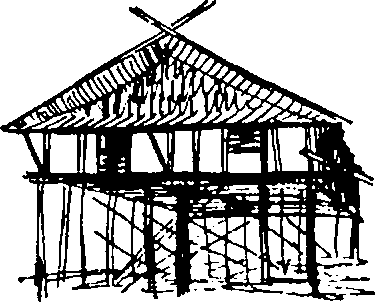

|
almadıkları için nazardan ölmüşler. İşte |
|
|
böyle, bak, bir ev, bir müze, bir kerhane (?) |
|
|
|
|
Böylece bu kesintili kaydın labirenti küçük makineden fışkırıyor, toplanıp tomarlanmak üzere halıya dökülüyordu; sonradan üçümüzün eğik kafaları onları çözmeye, tekrar dinlemeye, kimin söylediğini tartışmaya çalışırdı. Bazıları yalnızca ses boşluklarıydı. Mesela sadece tatlı, uzun bir iç çekiş -Iolanthe’nin benim karanlık odamdaki o kendine özgü iç çekişi. Yoksa ben dışardayken oraya birini mi almıştı? Bir kapı açılıyor, bir kibrit cızırdıyor, birisi tahta takunyaları görüyor. Graphos’un sesi -ama fısıltı halinde, bu yüzden kim olduğundan emin olamıyorum: Ama konuşan Yunan, kesinlikle şunları söylüyor: “Demek bunlar senin ayakkabıların, hı?” Sonra sessizlik uzun süre hışırdıyor; yatak gıcırdıyor. Sonra banyo musluğunun yine o kendine has şıkırtısı, akan suyun sesi geliyor. Evet bazı hışırtılı bölümlerin kendileri aslında iç çekişlerdi, basit hareketlere tekabül eden cafcaflı iç çekişler, “Ah” ya da (emin değilim) “Ah, anne” diye fısıldayan bir ses. Böyle hatalı kopyalar anlamı yok ediyor; o korkunç çıtırtıların bir kısmı emilen bir meme olabilir. Benim küçük aletim hiçbir şey yazmadan geçiyor, karanlıkta hiçbir şey yok. Bu, tereddütsüz yok edebileceğim tek kaset. Iolanthe!
Yüksek, mavi puro dumanı sütunları arasında oturup, tekrar yakalanıp yinelenebilecek kadar yakın olan; mesela hâlâ kendisiyle kıyaslanabildi -anılar kayıtlara karşı- bir geçmişin bir kırık kaydına dalıp giderdim. Yalnızca insan belleğindeki hatalar şüphe ve çarpıtmaya neden oluyor. Ne belleğin ne de makinenin tamamen emin olduğu zamanlarda kafadan atabiliyordunuz. Palimpsest.49*
ne de olsa doğa koca memelinin, |
doğanın müsrifliğinden söz |
patavatsızın, beceriksizin tekidir, |
ediyorsunuz; oysa bizim yaşlı |
geniş ve müsriftir... peki sen? Sen |
kancık o şişmiş memelerine rağmen |
neden olmayasın? |
son derece zayıftır |
(C ya da K) |
aslında, bütün fazla yağları |
|
tarihle yaptığı ölümüne savaşta |
Zoe Pithou |
eriyip gitmiştir. |
“çömleğin yaşamı” |
(C yada K) |
düşününün bunu, zira |
|
zihnin mekâna ihtiyacı vardır. |
Can çekişmek için değişiyor her şey! |
(C) |
ah o güzel değişim sancısı |
|
(C?) |
Bu tipleri sevmem genelde, |
|
ama zenginse çok hoş |
fısıltıyla gerçekleştirilen bir |
biridir herhalde. (H) |
diyalog, ama kayıt çok kötü; |
|
birkaç cümle anlaşılıyor: |
Şimdiki zaman geçmişi parça |
“Ama ölmek zorunda mı, onu başka |
parça devralır ve sürekli, |
türlü ortadan kaldıramaz mısın?” |
her nefeste yanlışlar; onu |
|
ölümün tayfından görür |
Ah Tanrım ne yaptım ben? |
âdeta. (K) |
(?) |
|
|
özdönüşüm, ölü benliklerin |
Gir. Kapıyı kilitle. |
aranıp belirlenmesi, ölüm düşünce |
(?) |
sinin sindirilmesi gibi temel |
|
olgular, esas kaygılar bunlardır. |
Bilmiyorum. Hiç |
Geriye kalan her şey göz boyamaktan |
bilmeyeceğim. (?) |
ibarettir. (K) |
|
Gittikçe büyüyen kâğıt yığınlarına gömülüp, sabahın ikisinde sıçrayarak uyanmak: lşığı söndürüp sürünerek yatağa gitmek. Sadece mutlu otun kafasında toplaşanları düşlerde ve ateşlerde yankılamak için. Mutlu mu dedim? Ah Charlock nâfelix -keserken kendi kendilerini bileyen jiletlerin, körlerin duyarlı parmakları ucunda titreyen bir elektronik Brailie’in cazibesine kapılıp da neden hayallerinin bu insan ayağı değmemiş patikalara girmesine göz yumdun? Oyuncaklarımdan süzülen bütün o melez sesler yaratıcılarının uykularını zehirliyordu. Tarihsel yankılardan karmaşık bir yığın -çünkü bir kere öldü mü her şey aynı bütüne katılıyor: İster Pausan’lardan kalma tarihi bir atıf. isterse çağımız fahişesinin bir lafı olsun –“üzerindeki ruj kemirilmiş olan kamusal bir ağız”; ya da orada burada birkaç satır şiirsel aforizma- “belirsizliği bir süreliğine hafifleşen şiir.” Bir yerlerde bir kızla el ele Delphi’nin, Hıristiyanlık sonrası emanetlere karşı esner gibi görünen büyük taş yığınları arasında dolaşmak.
Ya da Parthenon’un selüloit ayışığıyla modern bir sabun haline sokulduğu filmde olduğu gibi; Io’nun yüzü yılan bukleli, sessiz, taş kadınların iç kaygılarıyla ifadesizleşmiş. Taştan kafanın etrafında halka mı var? “Bir keresinde kesik bir dudak öpüldüğünde tuz ve şarap, biber ve ganimet vermişti.” Çöldeki havasız gecelerde Benedicta ve ben birer duş alır, sonra da kurulanmadan arabaya binip kıvrımlı kum tepelerine sürerdik, ay bizi kurulurdu. “Ölüm de saçlar gibi santim santim büyüyor.” Hippo’nun sesi: “Tabii açlık çekerler; en büyük rahimler altsınıflarda.” Sonra Julian’ın kaypak mantığı... (Ellerini görmeliyim onun.) Çığlık atarak uyandım, telefon çalıyordu; ben yetişene kadar sesi kesildi, arayan kapamıştı. Tekrar uykuya daldığımda ofisime girip defterimin üzerinde dolu bir tabanca bulduğumu gördüm rüyamda.
Her neyse... Ertesi gün onu Crockford’da yakalıyordum neredeyse; biraz heyecan yaşamak için sık sık oraya uğradığını öğrenmiştim. Gerçekten de o akşam yüklü miktarda para kaybetmişti Ama çok geç kalmıştım; bir telefon almış, aceleyle ayrılmıştı. Purosu koltuğun yanındaki gümüş kül tablasında halâ yanıyordu. Uşak onu bana gösterirken bir şehidin kemiklerini gösteriyormuş gibi bir hali vardı. Hık havada kıvrılarak yükselen alaycı dumanı izledim. Masalar tıklım tıklımdı: Bütün insanlar onu görmüştü, onlarla omuz omza durmuştu ya da oturup elini ağzına kapatarak gülmüştü, gerçekten buradaydı.
Sonra başka bir zaman kâtiplerden birinin ayırttığı yerleri telefonda Nathan’a bildirdiğini duymuştum; Julian Altın Ok’la Paris’e gidiyordu. Rezervasyon numarasını not ettim ve sonra kendimi de şaşırtan bir şey yaptım, Strand’e gidip otomatik bir silah ve altı şarjör aldım. Herhalde biraz rahatsız görünüyordum, Fransız vatandaşlığına kabul edilen bir rahip gibi. Bunun saldırganlıkla da bir ilgisi yoktu, yalnızca kendimi korumak için. Ama bu hareket beni biraz aptallaştırdı. Beni Victoria’ya götürecek olan taksiyi beklerken masamda oturup onu saygıyla temizledim. Ama bu sefer de trafik tarafından mat edildim. Biletçinin yanından hızla geçip çılgınca koşmaya başladım, çünkü trenim istasyondan yavaşça kayıp gidiyordu. Altıncı vagon. Altıncı vagon. Çabamı iki katma çıkardım. Cam kenarı, yirmi altı numara, ortalarda. Soluk soluğa bir yemek vagonunun yanındaki altı yazısını görüp onunla aynı hizaya geldim. Ama makine artık hız kazanmıştı ve istediğim vagona erişebilmem için olağanüstü bir hamle yapmam gerekiyordu. Tam platformun sonunda birkaç santimle onu yakaladım.
Evet, Julian’ın koltuğuyla başabaş geldim, ama yüzünü görecek kadar değil; ama ellerini gördüm! Jocas’ın elleri değildi, yo. Çok ince, küçük, beyaz, Napoléon’vari eller, bir puroyu tutuyorlardı. Yetenekli bir cerrahın elleri, girift, narin parmaklar; ama yüzünü göremedim, yüzüne yetişemedim. Platformun sonundaki bir yük arabasının üzerine Çöktüm. Nedense kendimi rahatlamış, biraz korkmuş, hatta azıcık kazanmış gibi hissediyordum. Ne kadar olmasa ellerini görmüştüm, daha doğrusu birini. Otomatiği istasyonun dışındaki bir çöp kutusuna eski gazetelere sararak attım. Cebimde olması çözümlenemeyen bir bulmacaydı; yine de ondan kurtulunca iki gözümün arasındaki sinirsel ağrı hafifledi. Yalnızca yüzümü görebilmek için, bir şiline saç yıkanıp taranan yerlerden birine girdim. Şaşırtıcı ölçüde iyi ve çirkin bir biçimde yakışıklı görünüyordum.
Evet, tümüyle yeni bir rahatlama duygusuyla ofise geri döndüm, yaratıcı yaşamın ıvır zıvırıyla çevrili olduğum o pelüş halı kaplı kafese. (Birkaç yeni proto yapılmıştı: Onlara kendimle övünerek baktım.) Sekreterler küçük dişli ve çarklardan heyecanlanmış, neşeyle (güzel pudralı yüzleri keten bezine çeviren) beyaz ışığa bakıyorlardı. Birden Julian’a ve onun kimliğine karşı duyduğum ilgiyi yitirdim; aklım onu bir kenara kaldırmıştı. Londra’mın kışının sade güzelliklerine bakıp, bitkilerin ortakyaşarlığını düşünerek ve cebimdeki bozuklukları şıkırdatarak pencerenin önünde durdum. Tabii bütün bunları laf olsun diye yapıyordum, çünkü aklım hâlâ Benedicta’nın sanki bir şeylerin patlamasını bekler gibi solgun bir dikkatle içinde yürüdüğü kır evinin lanetli imgeleriyle doluydu. İnsan kulağının asla duyamayacağı bir şeyleri işitmek için kendini olabildiğince zorluyordu. Hatta tam konuşmanın ortasında, “Hşşşt bile diyebilirdi: bir keresinde holde ona doğru yürürken gözlerini benim arkamda duran bir şeye diktiğini gördüm, benimle birlikte ona doğru ilerleyen bir şey. Geri sıçradı; sonra büyük bir irade gücüyle gözlerindeki suyu temizlemek isteyen bir yüzücü gibi kafasını silkeledi ve gülerek, sakin ve rahat tekrar bana doğru yürüdü.
Sonra bir öğleden sonra ofise geldiğimde cenaze alayı gibi bir dizi otobüsün dışarıya park etmiş ve bütün Merlin personelinin de telaş içinde olduğunu gördüm. İlk başta bunun bir cenaze olduğunu düşündüm; herkes en iyi siyah takımını giymişti. Hayatımda hiç görmemiş olduğum acayip kişiler binanın en ücra köşelerinden dışarı dökülüyordu -hepsinin giysileri ölüme duydukları saygıyı gösteriyordu; kurumumuzun değişik kabilelerini temsil ediyorlardı, devekuşuna benzeyen muhasebeciler, gergedanlara ya da domuzlara benzeyen avukatlar, değerli baykuşlara benzeyen sigortacılar. Çok güzel giyinmiş ve mavi bir amiralin kanatlarındaki halkaları andıran yüzükler takmış olan Baum, kâh pencereye koşup otobüslerin doğru düzgün dolup dolmadığına bakarak kâh, koridorlarda dolaşıp kapılara vurarak ve ters ters “İçerde kimse var mı?” diye bağırarak, bu serseri kalabalığı düzenlemeye çalışıyordu. Belli ki ulusal önem taşıyan birisi nalları dikmişti. Baum beni görünce irkildi: ‘ Gecikeceksin,” diye bağırdı ellerini favorilerine götürerek. “Bu kahrolası telaş ne için?” diye bağırdım, zavallı Baum önünde görünmez bir kürsü varmış gibi başını eğerek sitemle: “Büyük sergi. Bay Charlock. Bunu kaçırmamalısınız,” dedi. Bunu tümüyle unutmuştum. Baum imalı imalı giysilerime bakıyordu. “Olduğunuz gibi gelin,” dedi. “Üzerinizi değiştirmek için zaman yok. Şoförünüze söylerim.”
Ben de bu sözde matemcilerin uzun kortejini karlı Londra sokaklarında, kar ve yapışkan çamurda patinaj yapıp, her yerde trafik blokları tarafından durdurularak (Baum her seferinde çılgına dönüyordu) izledim. Bu bir cenaze alayı olsaydı ölü diye kimi seçerdik acaba? Neyse ki arabada kuvvetli bir kokteyl barı vardı, içimi dolduran bir boyun eğme hissiyle iki bardak viski içip kararlılığımı pekiştirdim. Beyaz bir bilardo masasına benzeyen havaalanına ulaştığımızda kar hızlanmıştı ve akşam oluyordu. Arabanın beyaz farları, birbirlerini tanımaya çalışan böceklerin antenleri gibi, birbirlerine sarılıyordu. Çılgın bir desinatör, beyazlığın üzerinde her yere siyah çizgiler ve paraboller çizmişti, makul ama deneysel bir ölçümbilim diyagramı gibi görünüyordu. Bir sığırcık sürüsü gibi ana binaya yerleştik. İçerisi aydınlık, geniş ve ıslaktı.
Sergi alanının önüne ipek bir kurdele çekilmişti. Her yerde polisler duruyordu. Baum’un anlattığına göre resimlerin sigorta miktarı o kadar fazlaydı ki neredeyse bütün polis teşkilatının onları koruması gerekiyordu. Her şeyin çok iyi olduğunu düşündüm. Hazinelerin kenevir duvarları karşısında Merlin’in en seçkin ürünlerini kapsayan, aynı uzunluk ve genişlikte bir başka duvar vardı. Elimde olmadan dilimi şaklattım -ama biraz gürültülü oldu- ve Baum’un öfkeli gözleri tarafından bastırıldı. Huzursuz huzursuz etrafta dolanarak misafirlerimizi karşılamak için yavaş yavaş toplandık. Ne içki ne de sigara içiliyordu. Herkes yeleklerini çekiyor, kol manşetlerini ilikliyor, yakalarını ve kravatlarını düzeltiyordu. Bazdan cilalı zeminde kayıyordu. Şoförümün bana vermiş olduğu notların arasında misafirlerin bir listesi vardı. Herkes buradaydı, tam anlamıyla herkes. Arkasından karın göründüğü döner kapıdan Londra’nın belediye başkanı içeri girdi ve kordiplomatiğin yüksek üyeleri. Peh peh peh!
Ya o göğsünün üzerinde rulo halinde tuttuğu şey açıklayıcı bir konuşma metni miydi? Ortalık polis kaynıyordu. Köle Kuruluşlar da bu toplumsal gösterinin dışında tutulmamıştı -balıkçılar, dericiler, iplikçiler, sepiciler, keresteciler, kayışçılar ve Tanrı bilir daha kimler. Hepsinin yüzleri pembe, hepsi uygun giyinmiş, hepsi de zanaatlerine hakkının verildiğini görmeye kararlı. Diplomatlara gelince, deyim yerindeyse uvertürü onlar yaptılar -o kadar hatırşinas, o kadar rahat, o kadar iblisvari bir biçimde zariftiler ki. Yapmacık şaşkınlık nidaları ve sözde sevinç çığlıklarıyla kalabalıkta birbirlerini buluyorlardı. “Seni görmek ne kadar güzel...” Birbirlerini büyük bir temkinle kucaklıyorlardı, aynı aktörler gibi, “sarıldıklarında birbirlerine, tutarlar birbirlerinin perukalarını yerinde.” Kar da ışıklar da fazlalaşmıştı. Yavaş yavaş kalabalığın arasından geçerek bir perdenin arkasında sıradan yolculara servis yapan küçük barı buldum. İçkim elimde bu karanlık batıl inançlı sürüyü gözetledim. Ya Iolanthe? Boşanmasının eli kulağında olduğuna dair söylentiler, mahzun resimleriyle birlikte gazeteleri süslüyordu. Sanırım toplumun gözü önünde yürütülen bütün popüler aşk maceralarında olduğu gibi -ilgi azaldığı zaman elinde kala kala bir yığın sabun köpüğü ve bir film kontratı kalıyordu. Topluluğun uğultusu arı kovanı gibi cam çatıya yükseliyordu: Ya da “otların arasında dedikodu yapan sivri dilli tırpanlar gibi.” Kendimi rahatsız ama güvende hissediyordum. Esnedim.
En sonunda büyük kapıların ardında bir hareketlenme oldu; altı büyük araba aynı anda, pervaneler gibi kanatlarını açarak park ettiler. Polisler tetikteydi. Spotların parlak pembe ışığı bütün sahneyi boyadı -bekleyen gözlerimize kocaman gölgeli yörüngeler çizen yoğun bir parlaklık. Kameralar vızıldamaya başladı; küçük flaşlar bu aurora borealis’i50* sert beyaz mızraklarla deliyorlardı. “İşte orada!” diye bağırdı biri. “Nerede? Kim? Orada! Kim?”
Kapılar tekrar kapandı, işadamı kılıklı insanlardan oluşan bir yarım dairenin merkezinde yavaş yavaş ilerliyordu, belki de korumalarıydılar. Tabii yüzlerce kez daha güzeldi ve kara giysili adamların önünde nadir bir çiçeğin taç yaprağı gibi duruyordu. O ünlü hilal şeklindeki gülüş. Sanki rolünden emin değilmiş gibi neredeyse yalvaran gözlerle etrafına bakarak yumuşak, çekingen adımlarla ağır ağır yürüyordu. Bir anda lobi davetsiz misafirlerle dolmuştu -yolcular, memurlar, berberler, pilotlar... Polis bu istilayı engellemeye çalıştı. O koskoca hol onlar omuz omza gelene kadar küçüldü.
Iolanthe bir pandomim perisinin o mahçup ihtişamıyla ilerliyordu, alacağı alkıştan emin ama yine de biraz çekingendi -tavanlara kadar yükselen gökgürültüsüvari alkıştan söz ediyorum. Uzun, nemli takma kirpikleri hatlarına biçim ve zarafet vererek onları herkesin hayranlığına sunuyordu. Bir tür parlak suni ipekten yapılmış olan giysisi içeriden aydınlatılmış gibi görünüyordu. İzlenim ve duyumlara göre ayarlanmıştı: Monet, Manet, Pissaro’nun gizemlerini açması için onu bekleyen büyüklere yaklaşırken de imbikten geçirilmiş bir huşu ifadesi takınmayı ihmal etmedi. Demek bu kız bir zamanlar bana Manet’nin ne olduğunu soran kızdı. (“Burada bir Manet aldığını yazıyor. Bu bir motosiklet markası mı?”) Belediye başkanına bunun bir motosiklet olduğunu söylemesini diledim. Belli belirsiz, karmakarışık tarzda bir karşılama-heyeti oluşturuluyordu. Tekrar bara girmek üzereydim ki Baum beni kolumdan zorla tutup üzüntülü bir yakarışla “Lütfen Bay Charlock. Lütfen” diye fısıldayarak yaka paça, oluşmakta olan heyete soktu. Kaçabilecek cesareti kendimde bulamadım; ben de kendimi kader birliği ettiğim diğer kölelerle omuz omza aynı hatta buldum. Toparlanmak ve ne kadar sallandığımı anlamak için bir süreliğine gözlerimi kapadım; yo, sallanmıyordum.
Aydınlık ağır çekim, acımasızca bize doğru ilerliyordu. Onun gerçekten ne kadar güzelleşmiş olduğunu görebiliyordum -tabii sahte bir güzellikti, ama çok gerçekti. Yumuşak teni yumurta akı maskesinden bir civciv gibi taptaze çıkmıştı. Gülen gözleri ve düzeltilmiş burun. Dahası uzun devlet büyükleri sırası önünden büyük bir rahatlıkla kayarken ona tanıştırılan insanlara öylesine alçakgönüllülükle davranıyordu ki herkesin kalbini kazanmıştı. Kallipygos Io, dişini tırnağına takmış üçüncü karyatidi oynuyor. Kameralar şehvetle, uyuşmuş yüzlerimizi çekiyorlardı. Devekuşu prensibine göre beni görmeyeceğini umarak gözlerimi kapadım; ama Baum’un eleştirel bakışı yüzünden bundan vazgeçmek zorunda kaldım. Parlak ışık sonunda benim üzerimdeydi ve o, bana uzattığı güzel manikürlü elleriyle karşımdaydı. “Xaire, Felix” dedi alçak, sevinçli bir sesle ve gözbebeklerinde küçük hınzır kıvılcımlar belirdi. Belki orada gururla titreşen bir şeyler de vardı. Başarısını gösteren bu tantana onu hem mutlu ediyor hem de utandırıyordu. Onun selamına aceleyle. Pleistosen Çağı Yunancasıyla karşılık verdim. Yanakları o eski gülüşünün izlerini taşıyan bir gülümsemeyle gerildi; sıradakilerin, herhangi birinin söylediklerini anlayıp anlamadığından emin olmak için etrafına bakarak alçak sesle konuştu. “Bir süredir seni görmek istiyorum; sana söyleyecek, soracak çok şeyim var.” Alçakgönüllülükle başımı sallayıp, “Tamam,” dedim, kulağa çok aptalca geliyordu. Yine de Baum’un göğsü kabarmıştı, onun sayesinde “Zamanın olduğunda, sen bilirsin.” diyecek cesareti buldum kendimde. Kaşlarını çatıp “Teşekkürler. En kısa zamanda,” dedi. Sonra belediye başkanının onu soluk soluğa beklediği yere doğru ilerledi.
Başka birisinin yazdığı belli olan kısa ve güzel bir konuşma yaptı; motosikletlerden hiç söz etmedi. Sonra büyük bir terzi makasıyla kurdeleleri kesti. Onun ardından hepimiz saygıyla sergiye girdik. Bu telaşe içinde belediye başkanı da onun konuşmasına karşılık vermeyi unutmuştu; konuşmayı yeleğinin cebine koyup olgunlukla takip etti. Beni orada tutacak başka bir şey yoktu, onun ayrılışını beklemek üzere bara geri döndüm. Çünkü beni tekrar görmek isteyebilirdi; hem Baum’u da incitmek istemiyordum. Perdenin aralığından keskin bir nişancı gibi o kadar büyük bir dikkatle bakıyordum ki sırtıma dokunan eli neredeyse hissetmeyecektim. Arkama döndüğümde Bayan Henniker’le burun buruna geldim. “Ohlum!” Dünyada görmeyi düşüneceğim en son kişi! Bir sürücü eldiveni kadar sert olan elini bana uzatıp hararetle elimi sıktı; muazzam bir canlılıkla konuşuyordu. Hiç değişmemişti -yo biraz; ekoseli bir giysi, zarif botlar, siyah bir kazak giymiş, inci bir kolye takmıştı. Temiz ve şıktı. Saçlarını çapkın, kısa bukleler halinde kestirmiş, kızıla boyatmıştı. Ağır ağır içki kokuyordu, bakışlarında ve konuşmasında bir tuhaflık vardı, ama bu, beni bunca zaman sonra görmenin verdiği heyecandan olabilirdi. Teni kaba, kırmızı ve pürüzlüydü. Elinde bir sürü dosya, bir de defter vardı. Muzaffer bir neşeyle topuklarının üzerinde inip inip kalkıyordu. Burada ne yaptığını sorunca kafasını sergi yönüne doğru sallayarak, “Onunlayım. Iolanthe’nin sekreteriyim” dedi. Sonra bir dikişte içkisini bitirerek, “Bir fırsatını bulur bulmaz bana telgraf çekip gelmemi istedi. Benim kızım gibi, ben de...” başka bir içki ısmarlamak için konuşmasına ara verdi, “onun için bir anne oldum.” Bana bu sırrı vermesinin altında şüphesiz çok derin duygular yatıyordu. “İnanamıyorum,” dedim; Bayan Henniker sert bir kahkaha attı. “Görüyorsun,” dedi parlayan gözlerle bardağını kaldırarak, “hayat çok acayip.”
Aynı sertlikte bir sürü içki içtik, ancak tanrıça giderken Bayan Henniker ayağa fırlayıp işinin başına gitmesi gerektiğini söyledi. “Haftaya Paris’e gelebilir misin? Seninle orada karşılaşmayı tercih ediyor. Julian yüzünden.” Sıçradım. “Tabii Paris’e gelebilirim.” Bayan H. kırmızı gerdanını sallayarak, “iyi o zaman, ayrıntılar için seninle haberleşirim. Biliyorsun kılık değiştirip seninle bir cafe’de filan buluşması gerekiyor. Sanırım sana her şeyi açıklayacak. Ama nereye giderse etrafını bir kalabalık sarıyor. Dairesinde de rahat etmek olanaksız. Seni ararım. Ah ohlum, ohlum.”
Bu büyük başarı yüzünden kendinden geçmiş olan Baum’la birlikte hoş bir şaşkınlıkla Londra’ya döndüm. Hem resimlere hem de Merlin’in çim biçme makinesi gibi düşünen kafanın üstün buluşlarına hakları verilmişti. “Kendi çalışmanın büyük ustaların karşısında sergilendiğini görmek seni çok duygulandırmış olmalı” dedi. “O da çok güzeldi] biraz korktum. Biliyor musun her filmi için bir milyon dolar alıyor. Bir milyon dolar!” Sesini çocuksu bir hayranlıkla yükseltmişti. “Çiçek gibiydi, Bay Charlock.” Evet, sentetik çiyle dolu açık bir çiçek. “Kendini işine adamış bir sanatçı” diye sürdürdü konuşmasını Baum heyecanla. Öyle. Öyle. Feu sucré51*’ dolu. Onun başarısını kıskanıyordum.
‘ Hafifmeşrep olmak iyi hoştu da daha ilk bakışta yeni Iolanthe insana bir olgunluk, bir sükûnet izlenimi veriyordu, beni kıskandıran da buydu. Benimkinden çok daha tutarlı bir hayat yaşayan, kendi kendisine yeten bir kadın görünümündeydi. Yine de iyi kargaşaydı değil mi? Köşeden bir gazete alıp onun ve kocasının resimlerini daha iyi incelemek için eve akşam yemeğine götürdüm; bu yaklaşmakta olan ayrılık hâlâ söylenti safhasındaydı tabii ama kimse aksini söylemediği için doğruluk payı vardı. Bütün bunların benle bir ilgisi yoktu. Yemekten sonra Julian telefon edip beni yerimden sıçrattı -yani neredeyse onun varlığını unutmak üzereydim ve birden yeniden dirilen sesi beni çok şaşırttı. Sergiden söz etti, başarılı olup olmadığını falan sordu. Elimden geldiğince tarif etmeye çalıştım; Iolanthe hakkında söyleyebileceğim herhangi bir şeyi duymak için can attığı izlenimine kapıldım. Onunla ilgili olan her şeyin üzerinde fazlaca duruyordu sanki.
Sonra utanarak boğazını temizledi ve neredeyse alçakgönüllülükle, “Eskiden senin metresindi değil mi?” diye sordu. “Hayır, bu kadın değil. O bambaşka bir kızdı. Biliyorsun tümüyle değişti,” diye cevap verdim. Julian’ın sesi değişti. “Evet, biliyorum.” dedi, “biliyorum”. Uzun bir sessizlik oldu sonra: “Seni görmek istedi mi? Görüşecek misiniz?” dedi. Ama uzun süredir şüpheleniyor olmanın verdiği temkinle, “Hayır. Artık birbirimize söyleyecek hiçbir şeyimiz yok; bunun bir anlamı olacağını zannetmiyorum,” diye karşılık verdim. Mırıldandı, bir kibrit yaktığını duydum. “Anlıyorum. Bu arada, Benedicta’nın geçen hafta pek iyi olmadığını duydum. Nash onu görmeye gitti.” Sanırım bunu beni kışkırtmak için söylemişti. Hiç sesimi çıkarmadım. Benedicta içimdeki safrayla birlikte gırtlağımda yükseldi, midem bulandı.
“Bu arada,” dedi Julian, “birkaç günlüğüne Paris’e gitmeni istiyorum.” Bana sürmekte olan görüşmelerin ayrıntılarından söz etti; usulüne uygun biçimde onları defterime not ettim. “Çok güzel.” dedim, “çok güzel.” Hepsi bu kadar; sesi Dublin ya da Zürih’ten geliyor gibiydi. Ateşin ve puromun başına hafif bir kuşkuyla döndüm. (Eğilmek ya da eğilmemek, işte bütün mesele bu?) Yatmadan önce Bayan Henniker’e ertesi gün beni ofisten aramasını rica eden bir mektup yazdım.
Ama kablodan gelen Iolanthe’nin uykulu sesiydi. “Henniker bugün izinli ben de kendim arasam diye düşündüm...” diye başladı, sonra da sanırım santral memurları tarafından duyulma olasılığına karşı Yunancaya geçti. “Geldiğinde beni araman için sana bir numara vermek istiyorum. Umarım gelirsin. En azından bir ay daha buradayım. Görüşmeyi iple çekiyorum. Ne zaman gelmeyi düşünüyorsun? Cuma ve cumartesi boşum.” Böylece randevu, beni zaten Paris’e götürecek olan tesadüf tarafından desteklenip teşvik edilerek, ayarlanmıştı. Karlı Londra’dan bir süreliğine kurtulma fikri moralimi düzeltti. Her ne kadar bu firmaya ait olan ve her şeyin bedava olduğu Diego’da kalmak demek olsa da. Biliyorum. Herkes Diego’dan nefret eder. Büyüklüğü, içinde kalanlara korkunç bir kişiliksizlik verir. Ama patentlerle ilgili tartışmam gereken bazı küçük ayrıntılar vardı: Ve burası da tam yeriydi; çünkü deri ve Babil purosu kokan özenle döşenmiş konferans salonlarıyla ünlüydü. Gösterişli kakmalarla süslemiş giriş hollerinde mekik dokuyan uluslararası iş dünyasının geleneksel sakinleri burada toplanırlardı -siyah uşaklarıyla petrol haritalarının üzerine düşünceye dalan Arap şeyhleri, ABD’nin türlü numaralar çeken, küçük bankerleri, unutulmuş kral ve kraliçeler, gangsterler, sofular ve şişman simsarlar. Eleştirel tartışmaların, acı açıklamaların, politik entrikaların, münakaşaların, fikir ayrılıklarının hiç durmayan uğultusu havada asılı dururdu. Bütün bu çeşitli işler çoğalır; Diego yüzlerce çatışan amaç, plan ve hiziple uğuldayıp dururdu.
İşimi çabucak bitirip daha önce gençken de kalmış olduğum on dördüncü caddeye taşındım; eski Corneille hâlâ oradaydı, yine de o zamana kadar yüzlerce kez el değiştirmiş olmalıydı. Hâlâ genel paspallığı ve arızalı su tesisatıyla yapmış olduğu ünü koruyordu ama fiyatlar ehvendi ve odaları sağlıksız ama ağaçlı, romantik bahçelere bakıyordu. Hem eski odam da boştu. Gerçekten on üç numaraydı, ama batıl inançlar yüzünden on iki A şeklinde numaralandırılmıştı. Eski telefonlar hışırdayıp cızırdıyor, en sonunda ulaşabildiğim Iolanthe’nin müzikal kahkahasını biraz değiştiriyorlardı. “Bak,” dedi, “kalabalıktan yana dertli olduğumu biliyorsun. Sana anlattı değil mi? Yanımda bir aynasız olmadığı sürece yüzümü göstermeye cesaret edemiyorum. Biraz rahat edebilmek için kılık değiştirmek zorundayım.” Sanki bundan hoşlanıyormuş gibi konuşuyordu. “Bu daire de bir işe yaramıyor; burada gözetleniyorum.” İnledim. “Aman Tanrım,” dedim, “sen de mi? Peçe ya da sahte bıyık takarak mı buluşacağız yani? Hem seni kim izletiyor?” Tekrar inledim. “Julian!” dedim acı bir kesinlikle. Kahkahalarla güldü. “Tabii ki değil. Kocam.” Dışarıda Paris bir erken bahar ılıklığındaydı, oluklardan sular akıyor, ağaçlar yaprak çıkarıyor, kuşlar ortalıkta dolanıyorlardı. Parklarda yeşeren ağaçların kokusu vardı, botanik bahçesindeki taştan Pan heykelinin penisinden eriyen son damlalar akıyordu. “O zaman ne?”
“Solange’ı oynayacağım,” dedi neşeyle.
“Solange mı?” Şaşırmıştım. “Solange hakkında ne biliyorsun ki?”
“Senin küçük sevgilin,” dedi. “Onun hakkında anlattığın her şey bir fotoğraf gibi hafızamda kayıtlı.”
“Sana Solange’dan söz etmiş miydim?” Bu gerçekten de şaşkınlık vericiydi; Solange birlikte kısa bir yaz geçirdiğim küçük bir yosmaydı. Hatta zamanımızın çoğunu da bu odada geçirmiştik. Ama lolanthe’ye ondan ne zaman söz etmiş olabilirdim ki?
“Unutmuşsun.” dedi. “Bana onun hakkında her şeyi, aramızda kötü kıyaslamalar yaparak anlattın. Kendimi çok kötü hissettiğimi hatırlıyorum. O kadar şöyleydi ki, o kadar böyleydi ki. Bir de bunların Paris şımarıklıklarından başka bir şey olmadığını anlayamamıştım. O günlerde herkesin Paris’te bir aşk macerası yaşaması gerekiyordu, yoksa gülünç duruma düşüyordun. Ama ben bunu bilmiyordum, cehaletimden yararlandın. Her neyse, büyük bir öğrenme tutkusuyla, dikkatle dinlerdim. Solange’ı hiç unutmadım. Dahası bunu sana kanıtlayacağım. On bir buçukta. Café Argent değil mi?” Doğrusu gerçekten de Café Argent’da buluşurduk; sonra artık tümüyle unuttuğum o tatlı küçük manevraları yapmak için buraya gelirdik; öyle ki küçük Parislimin zayıf beyaz yüzünde uçuşan ifadeleri hatırlamak için gerçekten de çok fazla uğraşmam gerekiyordu. “Güzel, güzel” dedim. Yeniden hatırlanması çok tuhaf bir şeymiş gibi geldi bana. İnsan arkasında ne tür artıklar bıraktığını bilemiyor -başkalarının belleklerinde korunan artıklar. Bir tek yaşamın bıraktığı tonlarca artık, insan yıkanıp gittiğini düşünüyor; ama yo, birileri onu kaydetmiş -bazen rastlantısal bir söz, bazen upuzun bir hikâye. “Çok iyi,” dedim boyun eğerek, “O zaman gelip onu oyna.”
Bunu o kadar iyi yaptı ki bir an gözlerime inanamadım -tabii tam olarak Solange gibi görünmüyordu: Hem günün o saatinde bile terrasse’ta oturan birkaç genç kadın vardı. Bir sokak satıcısının tablasındaki ıvır zıvır gibi dağılmışlardı. Ama sonra Solange! Ancak garson üzerinde soru işareti olan küçük bir gazete parçasını getirip başıyla göndereni gösterdiğinde Solange mezarından fırlayıp ılık bahar güneşine çıktı. Uçuk mavi, kötü kesim eteği, yıpranmış gri ayakkabıları, sararmış yağmurluğu, ucuz boncukları, timsah derisi çantası, leylak rengi beresiyle Solange. Ayağa kalkıp beyaz pudralı yüzü, fazlaca boyanmış gözleri, gösterişli ama çekingen yürüyüşüyle yanıma geldi (çekingenlik Iolanthe’nin kendisinden kaynaklanıyordu). “Je suis libre, Monsieur.52*” O utangaç öğrencilerin, Almanların. İsviçrelilerin, Amerikalıların arasında yükselen o kısık, monoton ses; küstah bir gülümsemeyle gizlenen o korkunç hüzün. “Iolanthe!” diye bağırdım, “Tanrı aşkına daha neler?” Çantasını aramızdaki masaya bırakarak karşımdaki hasır iskemleye otururken o bildik kahkahasıyla katıla katıla gülüyordu. Garsonu çağırmak için ellerini çarpıp o mükemmel ses tonuyla bir coupe sipariş etti. “Hadi,” dedi, “bana rol yapamayacağımı söyle. The Times öyle diyor.” Ama Solange’ın bu kadar iyi canlandırılması yüzünden dilim tutulmuştu. Tabii peruk takmıştı, şakaklarından çıkan iki sivri tutam gamzeli yanaklarına doğru uzanıyordu, saçları kahverengi kısa ve kıvırcıktı. Gerçekten de onu bu halde kimse tanıyamazdı. “Görüyor musun?” dedi kolumu tutarak. “Böyle rahat rahat konuşabiliriz. Başına gelen her şeyi anlat bana.” Çok fazla şey olmuş gibi durmasına rağmen aslında feci bir biçimde az şey oldu diye cevap verebilirdim belki. Hem nereden başlamalıydı ki? Ben de kozumu başarılarımı sıralamak yönünde kulladım; ama birçoğunu zaten biliyordu. Sanki söylediklerim onun sezgilerini doğruluyormuş gibi arada bir başını sallayarak, dikkat ve ilgiyle dinledi. “Aynı yolun yolcusuyuz.” dedi en sonunda. “İkimiz de zengin, başarılı ama hastayız.”
“Hasta mı Iolanthe?”
“Ben fiziksel olarak hastayım.”
“Ya benimki?”
“Sen yanlış yolu seçtin. O zamanlar bile bunu yapacağını biliyordum. Kartlarında hep çıkıyordu. Sonra gerçek insanları her zaman açıklayıcı şeyler olarak gördün, salgı bezleri olarak. Hiçbir zaman özgür olamayacağını hissediyordum, sonradan Merlin’e girdiğini duyunca içim parçalandı. Onlardan kurtulmanın bana neye mal olduğunu bir ben bilirim. Bunu hiçbir zaman yapamayacağını biliyordum.”
“Neden kurtulayım ki?” dedim inatla. “Bana pekâlâ da uyuyor.” Tiksintiye çalan bir sıkıntıyla yüzüme baktı; sonra ifadesi değişti. Gerçeği anlatmadığımı fark etmişti. “Merlin beni şimdi bulunduğum yere getirdi,” dedim beylik bir ağızla; böyle zırvaladığım için kendimi kötü hissederek. Gülmeye başladı. Öf! Konuşmanın gidişatı pek de iyi değildi. “Hadi yürüyelim” dedim. Café Déme’in önünden geçerken Solange’ın ilan panosuna bir mesaj bırakıp bırakmadığını görmek için içeri girmemizde ısrar etti. Tabii kötü bir Fransızcayla yazılmış bir mesaj vardı: Bayan Henniker bırakmıştı. “Bu biraz fazla uzadı,” dedim ters ters. “Artık otele dönsek iyi olur...” Bir an için gözlerinde beliren hüzünlü ifade gülümsemesi tarafından yutuldu. Tekrar koluma girerek yürümeye başladı. Heykellere bakıp alçak sesle konuşarak avare avare parkta dolaştık, farklı dünyaların insanlarıydık. “Yani şimdi sen özgür müsün? Bu senin için ne anlama geliyor, Iolanthe?”
“Her şey; buna ihtiyacım vardı. Ama bana çok fazla şeye mal oldu -aslında şirketin iflasın eşiğinde- tabii Julian sayesinde. Benim özgür olduğumu görmeye dayanamıyor.”
“Julian’ı tanıyor musun?”
“Onu bir kere gördüm, tek bir bakış, bir ömür boyu yetecek bir bakış. O zaman bana âşık olduğunu anladım, ama sapkın bir biçimde, ona karşı geldiğim için, özgürlüğümü elime aldığım için. Elime geçen ilk parayla kendi firmamı kurdum, kendi rollerimi seçtim. Julian bizi yıkmaya çalıştı, çünkü -yine sapkınca- beni elde edebilmesinin tek yolu bana sahip olmasıydı, hisselerimi satın alması.” Acıyla değil hüzünle güldü. “Siz erkekler kadınları huzursuz etmekten başka ne işe yararsınız ki?” diye ekledi gülümseyerek. “Ama Julian’ın ifadesi o kadar tuhaftı ki onu yeniden yaratabilmek için resim dersleri bile aldım.”
“Nasıl karşılaştınız?”
“Karşılaşmadık; seyirci araştırması grubundan birkaç kişi hayranlarımdan birinin hep geldiğini, tek bir filmi bile kaçırmadığını, onları haftalarca izlediğini söylediler. Bunun gazeteler için iyi bir hikâye olduğunu düşünüyorlardı; ama Julian bu hikâyenin gazetede çıkmasını engellemişti. Sonra bir fuarda onu bana gösterdiler.”
Nedense bunu kıskandım.
Luxembourg’u, çocukların kum havuzunu yavaş yavaş geçerken Atina anılarımızın görünmez ipleri bizi çekiyordu. Beni şaşırtan çok fazla şey vardı; insanın aceleyle okuyup dolabın bir köşesine sıkıştırdığı bir tomar mektubun tekrar eline geçmesi gibi bir şeydi. Onları yeniden okuyunca bir sürü yeri kaçırmış olduğumu anlıyordum. Mesela: “O zamanlar seni ne kadar çok sevdiğimi sandığımı düşünmek beni sonradan çok şaşırttı. Seni sevmiştim ama bazı özel nedenlerden. Kafamda seni o yere getirmemi engelleyen şey senin anlayışsızlığındı -o tuhaf kayıtsızlığın. Çünkü nesnel, soğuk ve saygılıydın. (O hayatım, aşkın bu kör bağırsağı.)
“Arada bir senin çok aşağılık bir adam olduğunu düşünürdüm; ama hiç bocalamadım. Sen, bir kadının yaşamdan ne kadar az şey beklediğini bilmezsin Felix. Tek bir şey: Saygı. Sevilebileceğimize inanacak kadar kendimize güvenmeyiz. Bu ekmeğin üzerine yağ ve reçel sürmek gibi olur. Ya ekmeğin kendisi? Bir kadın yalnızca saygıyla kazanılabilir; umutsuzluğa kapıldığında bununla avunur. Bütün Atina benim bir sokak kadını olduğumu bildiği halde sen sokakta benim koluma giriyordun. Benimle birlikte görülmeye cesaret ediyordun, benim için kapıları açıyordun. Ne şövalyelik diye düşünüyordum! Herkes nişanlandığımızı düşünecek. Ama sonradan bunun senin için hiçbir anlamı olmadığını anladım. Bu sadece dalgınlıktı, küçük şehirlerin düşünüş tarzını bilmemenden kaynaklanıyordu.” Büyük bir neşeyle güldü; o dost yüzünü kendime çevirerek onu kucaklamak istedim, ama acıyla inleyip yaralarının henüz kapanmamış olduğunu söyledi. “Çalışmalarında kanıtlanmamış şeyleri kanıtlayacağını söylerdin; ama sonra anladım ki her yeni buluşla birlikte o sözde kanıtlanmış şey yalanlanıyordu. Çöküyordu. Bütün bunlara aslında bir kaçacak delik işlemi denebilir; hepimiz buna gerek duyuyoruz, çünkü zayıfız.”
Bu ılık Jüpiter havasını, yaprakları, eğik bir güvertede yürüyormuşçasına zorlanan adamı, sıcakta kocaman köpekleri tarafından oraya buraya çekilen diğer insanları içime çekiyor, bütün bu söylediklerini umursamıyordum bile. Sezgi şartlı bir refleks haline gelebilir mi? “Ve sonra,” diye sürdürdü konuşmasını, “ne yaptığını duydum ve tahtaya vurdum. Bir gün benim gibi bağımsızlığı seçeceğine biraz olsun inanıyordum. Ama geçen gün yüzünü gördüğümde ciddi bir girişimde bulunmadığını anladım. Her zamanki gibi komik ve ölgün görünüyordun; seni şapır şupur öpmek istedim, çünkü Julian orada, kalabalığın arasındaydı.”
“Julian orada mıydı?”
“Sanırım Julian”dı.”
Kızgın olup olmadığıma emin olmaya çalışarak çakıl taşlarını tekmeledim. “Böyle ahkâm kesmen hiç hoşuma gitmedi,” dedim sonunda, “hem de çok özel bir şey yapmış olmakla övünerek; kitle kültürünü, kaz kafalı cinéastes53* tarafından sulandırılmış klasiklerin bayağılaştırılmış versiyonlarıyla besleyen sen...” Iolanthe bana büyük bir keyifle baktı. “Mesele bu değil; bir film şirketi yerine Plaka’da küçük bir terzi dükkânı olsaydı da fark etmezdi. Bu yanılsamalar, can sıkıcı sırlar olmadan yaşamak demek, açık yaşamak. Gerçek özgürlük. Benim kendimin.”
Küçümsemeyle güldüm. “Gerçek özgürlük mü?” Neşeyle başını salladı. “Elinde olmadan kendine ne kadar gerçek olduğunu soracaksın; sana sözde bir gerçeklik veren tek şeyin firma olmadığını düşüneceksin. Firmanın sadece kötü bir şey olduğunu söylemek istemiyordum; yapmak istediklerini elde etmen için sana yardım ediyor.”
“Peki bu Quaker rahibesi saçmalıkları da ne?”
“Seni kızdırdım,” dedi üzüntüyle. “Hadi başka şeylerden konuşalım. Biliyorsun Graphos ölüyor; eğer hastalığı aklına zarar vermemiş olsaydı şimdi yüce gönüllü bir kadının sevgisini hak etmiş olacaktı. Beni sevmiş olduğunu ve hâlâ sevdiğini düşünmesi kaderin alaycılığından başka bir şey değil. Bunu inkâr etmesini çok isterdim. Ne de olsa sapık huylarına ve beğenilerine rağmen beni eğitti, bana görmeyi öğretti.”
Eski otelin kapısına gelmiştik; anahtarımı çıkardım ve kol kola ağır ağır merdivenleri çıktık. Etrafına bakarken ağzını şaklatıyordu. “ Tam senin tarzında bir oda,” dedi. Kirli pencereye gidip yeşilliklere baktı. Yağmur başlamıştı, yağmur fırtınası. “Acropolis’teki yarım kalan pikniği hatırlıyor musun, hani birden bardaktan boşanırcasına yağmur yağmaya başlamıştı, mermerdeki ayak izlerimizden buhar tütüyordu?” Ayakkabılarını çıkardı, ensesinin altına bir yastık koyup bir sigara yakarak yanıma uzandı. Tek eksiğimiz yanan bir mum bir de ikondu... İkonlar, kolektif duyarlığın evrak çantası. Uyuklarken onları düşündüm. (“Ne Tanrı var ne de yazgı: Bunu bir kere kabul ettin mi bazı şeyleri ayırt etmeye başlıyorsun.”) Gözleri yarı açık sessizce yatıyordu. Tapılan mumyanın sargılarına, dışındaki maddelere nüfuz etmeyi başarabilmiştim. Hem insan özlemini efsaneleştirmemeli.
Elim onunkini arayıp buldu; yarı uyukluyorduk, alınan her nefesle Çok uzaklarda kalmış olan bir geçmişi yeniden kuran arkeologlar gibiydik. Esrarlı sesler ve küçük baykuşların ıslıkları; parklarda uçuşan beceriksiz yaprak kümeleri. Firma aşırı özen yüzünden yok olan o büyük sanat eserlerinden biri gibiydi. (“Doğanın, o büyük aristokratın amaçladığı şey, yüce azınlığın azami mutluluğudur.”) Marchant’ın diyebileceği gibi, bilim yararına aç bırakılmış, işkence edilmiş, kesilmiş bir beyaz fare; insan bazılarını ancak kan akıtarak ikna edebilir. Boynundan hafifçe öptüm, o tatlı, hüzünlü sesiyle durmadan konuşurken uyuklayarak kendimi hareketsizliğe bıraktım. “İnsanın yaşam deneyiminin sonuna geldiğini hissetmesi korkunç bir şey. Temelde hiçbir yeni beklenti yok: İnsan aynı şeyin değişik kombinasyonlarını beklemeli herhalde. İnsanı bir tür yenilgiye uğratan bir şey. Sonra inişe geçiyorsun, bir tür ölüm sonrası hayatı yaşamaya başlıyorsun, kanın soğuk, nabzın düzenli.” Yavaş sakin nabzını duymam için parmağımı bileğine bastırdı. “Yine de burası yeni, büyük bir anlayışın arkadan, çalıların arasından üzerine sıçrayıp seni bir aslan gibi yutabileceği en verimli nokta.” Kısa iç çekişler, kısa sessizlikler, kafayı bulmuş insanlar gibiydik; hiçbir cinsel çekim olmaksızın asırlık bir yakınlığın tarihöncesi şekline dönmüştük.
“Bunun bir tür lanet olduğunu söyleyebilirsin, çünkü hiç kimseyi mutlu edemedim: bazılarını da çok fazla yaraladım, isteyerek değil, yalnızca onların yaşamlarının kesiştiği bir yörüngede bulunduğum için. Hippolyta, onu kandırmak için rol yapmak zorundaydım. Ve diğerleri, zavallı Sipple gibi. Ne zaman Polis’e gitsem kefaret öder gibi onu buluyorum, ama kardeşimden hiç söz etmiyoruz.”
“Sipple’a ne yaptın ki sen?”
Esneyip gerinerek ayağa kalktı ve aynanın önüne oturdu; peruğunu çıkarıp yavaş yavaş taramaya başladı. “O oğlanı bildiğini düşünüyordum; benim kardeşimdi: onu öldürmek zorunda kaldım.”
Sessiz odada bir silah patlamış gibi oldu. Sabırlı bir sadakat ifadesiyle gülümseyerek bana döndü. “Zavallı Sipple da bunun semeresini çekecekti. Gittikçe körleşiyor. Parfüm uzmanı oldu. Birileri onun o küçük çubuklarını parfüme batırıyor, o da onların parfümleri nasıl karıştıracaklarını söylüyor. En önemlisi de Katolik Kilisesine girmek için uğraşıyor.”
“Ama neden Iolanthe? Tarın aşkına neden?”
“Acıklı hikâye. Babamın yapmasını istemedim; çok sert, vahşi bir adamdı ve Dorcas’ı cezalandıracağına yemin etmişti. Meryem’e hem de. Sadece bu yemin yüzünden bile olsa bunu yapmak zorunda kalacaktı. Onun vicdanında bu yükle ölmesine izin veremezdim. Altmış beşindeydi. Onu korumak için araya girdim; Graphos da her şeyi bastırdı. Kefaret aslında çok şişirilmiş bir düşünce bence, ama yine de belli olmaz.”
“Taş yerinde ağırdır!” Yatağa gelip dudaklarımın arasına yanan bir sigara tutuşturdu; uzun bir süre birbirimize bakarak sessizce sigara içtik.
Sonra babasının ölümünden konuşmaya başladı. En azından o kızının kendisi için ne yaptığından habersizdi. Sahne büyük bir canlılıkla gözlerimin önünde belirdi. Örümcek ağları, şöminenin önündeki bir masa ve üç sandalyesiyle küçük bir ev. Tetanozla savaşarak ölmekte olan bir köylü, sustalı bir çakı gibi yavaş yavaş kapanıyor. “Hiç dişlerini sımsıkı kenetlemiş olan birinin çığlık, delirmiş bir ayı gibi insani olmayan bir çığlık attığını duydun mu?” Tökezliyor, eşyaları deviriyor. Teslim olmuyor, ölümle sonuna kadar savaşıyor. Titremeler gövdeyi çok tuhaf şekillere sokuyor. Kendisine çok küçük gelen binici çizmeleriyle boğuşan biri gibi. Sonra mumlar tütüyor; ama ölünce bile yatmıyor. Ne zaman yatırmaya kalksalar yaylı bir kukla gibi doğruluyor. Köylülerin iç parçalayan ağıtları. Ama bir faydası yok, tabuta sığmıyor. En sonunda onu kurallara uygun gömebilmek için köyün kasabı bir hindi gibi kemiklerini kırmaya çağrılıyor. Iolanthe’nin kaşlarında ter birikmişti, yatağın ayak ucunda bir aşağı bir yukarı dolaşıyordu. Berber kanını akıtmadan önce koluna yeşil bir kurdele bağlamışlar. O yaşlı, kuru kolda o kadar çok kan varmış ki. “Teslim olmuyordu anlayacağın.” Sonra bir an duraklayıp konuşmasını sürdürdü: “O küçük ev hâlâ orada, benim, ama gitmeye cesaret edemiyorum. Onu olduğu gibi bıraktım, anahtar kuyunun çıkrığının yanındaki oyukta. Ama sen de hatırlarsın değil mi? Eğer oraya yolun düşerse gidip bana da haber verir misin? Yaşlandığımda oraya döneceğimi hissedecek kadar Yunanlıyım. Ama nasıl? Önce birileri kötü ruhları defetmeli. Felix eğer bunu yaparsan sana minnettar kalırım. Yapar mısın?” Öylesine ciddiydi, o kadar yalvarıyordu ki ona evet dedim, boş boş, evet yaparım. Tabii şimdi çok geç, her zamanki gibi.
“Şu sıralar buradayım,” dedi hüzünlü bir buruklukla. “Dünyanın en güzel kadını diyorlar. Tanrım.”
Şimdi o kadar uzakta ki, zamanın gölgeleri arasına karıştı; geriye sadece iflas etmiş grupların depolarında saklanan maskeleri kaldı. Iolanthe şimdi, ne zaman Yunanistan’ın mavi göğünün bir parçasını ya da Plaka’nın üzerinde dağılan günü görsem beni saran belirsiz bir hüzün dalgası. Sonra korkmuş bir çocuğun sesiyle, “Bak” derkenki dehşeti ve üzüntüsü; sonra gazlı bezler yüzünden şişmiş sargılı göğüslerini gösterdi. “Henüz tümüyle iyileşmedim.”
“Kanser mi?’ diye bağırdım; ama kafasını sallayarak cevap verdi: “En azından henüz değil. Daha da gülünç. Geçen yıl Hollwood’da sarkan göğüsler için yeni bir uygulama çıktı. Sıvı parafin şırınga ediliyordu. Pek rağbet gördü. Ama benimki yolunda gitmedi, hem tek ben değilim Felix.”
“İşte seni bugüne kadar getirdim,” diyerek kıyafetini düzeltmek üzere aynanın karşısına oturdu. Takvim zamanının dünyanın büyük şehirlerine hapsedilmiş kulları. Iolanthe’yi düşlerime saldım; battıkça battı, belleğin ve isteğin sualtı dünyalarında dönüp yuvarlanan kurşun bir çubuk gibi battı, dağıldı, gözden kayboldu.
“Hadi,” dedi sonunda, “bu kadar otopsi yeter. Bir araba kiraladım, bizi ofiste bekleyecek. Birlikte kıra gidelim, yemek yiyelim, çimlerde uzanalım. Unutalım, oyun oynayalım.”
“Unutalım,” dedim ve birden Benedicta’yı hatırladım. “Ofise telefon edip Benedicta’dan haber var mı öğrenmem lazım; son zamanlarda pek iyi değil.”
“Benedicta,” dedi Iolanthe. “Bütün bunların ilaç kullandığı için olduğunu söylüyorlar. Bunu uzun zaman önce duydum, doğru olabilir. Anlaşılan Julian...”
Kafa derimin öfkeden karıncalandığını hissettim; kara bir hiddet balonu omurgamdan tırmanıp beynimin ortasında patladı. “Artık bu adı duymak istemiyorum,” dedim. “Rica ederim.”
‘Tamam,” dedi sakin sakin ve beni öptü. Bir anaokulu çocuğunu sakinleştirmeye yarayabilecek bir öpücük. Aşağı inerken on üç numaranın kapısını arkamızdan çarptım.
Akşam geç vakit geri döndük, önce kılığını düzeltip sonra yolu geçerek apartmanın cam kapısına doğru yürüdü. Dışarıda duran şirket Rolls’unun çevresinde küçük bir kalabalık vardı. Arabanın orada olması onun da orada olduğunu ve her an dışarı çıkıp bir yerlere gidebileceğini gösteriyordu. Kalabalığın ne kadar çabuk toplandığını görmek çok şaşırtıcıydı. İnsanlar sanki kaldırımlardan fışkırıyordu: Mayanın kabarmaya başlaması için asansörden inip koridorun ucundaki kırmızı ışıkta belirmesi yeterdi. İmza defterleri hemen ortaya çıkardı. Onun için yol açmak gerekirdi. Sonra o arabaya oturduğunda burunlar gülünç bir biçimde cama dayanırdı; susuz yüzler onu hırsla içlerine çekerlerdi, içerlerdi. Ama küçük Solange rüküş bir terziye benziyordu, o kapıyı açarken kimse başını çevirip bakmadı bile, içeri girip kendini sağlama aldığında dönüp bana öpücük yolladı ve asansörü çağırdı.
Gece yarısına kadar yıldız tozu saçılmış karanlık gökyüzünün opal serpiştirilmiş zeminini yansıtan nehir boyunca yürüdüm; üşüdüm, soğuktu. O bahar günü yerini beni kalın bir palto giydiğime sevindiren sıfırın altında bir geceye bırakmıştı. Bir karmaşa ve şaşkınlık duygusuyla boş kitapçı barakaları ve nehir kenarına demir atmış karanlık gemilerin yanından geçtim; ağladığımı düşünüyordum ama gözyaşları içeri boşalıyorsa, acemi yüz hiçbir ifadeye bürünmüyorsa, insan ne yapabilir ki? Hak ettiğim tek şey bir anda içine menimi boşaltacağım, pis, tanımadığım, yaşlı, altın dişli ve pörsük kalçalı bir kadındı, parasını alıp tekrar beklediği elektrik lambasının altına inecekti; ama bu bile sadece kabadayılıktı, narsisizmimin ve bencilliğimin sert kabuğuna güçlükle işleyen, bir yara açma girişimiydi. Kirli iç çamaşırı, lastik ve ter kokuyordu; ne de içgözlemin kemiklerimi yalayan susuz köpeklerini yatıştırabiliyordum. Bir kitapçının vitrininde Flaubert’in açık duran bir kitabından bir cümle okudum: “On ne saura jamais ce qu’il a fallu etre iriste pour entreprendre de ressusciter Carthage.”54* Bunu tekrar tekrar okudum; eğer aklım başımda olsaydı ben de bir tirbüşon nesri üstadı olabilirdim kim bilir? Bacaklarım beni taşımaz bir hale gelene kadar yürüyüp durdum; sonra köhne odama dönmek için bir taksi tuttum, gecenin geri kalan yarısını solunumumu ve irademi felç eden bir kâbusun dev şekilleriyle boğuşarak uykusuz geçirdim. Kendi iniltilerim beni uyandırdı ve Benedicta’nın söylediklerini hatırladım: “Ama ben gündüzleri kâbus görüyorum Felix, pavor diurnus55* diyor Nash; onlardan uyanmak çok daha zor. (Gece yarısı kandaki karbon monoksit en yüksek düzeyine erişir.) Ne zaman dürüstçe konuşsa insan gerçeğin vahşi bir şefkatle yırtıldığı izlenimine kapılıyordu. Ertesi gün Iolanthe’ye onu tekrar ziyaret edeceğime söz veren ve acil bir iş için hemen Londra’ya dönmem gerektiğini söyleyen bir not yazdım. Çözümleyemediğim bir neden yüzünden karşılaşmamız canımı sıkmış, kendime duyduğum saygıyı yerle bir etmişti. Paris’ten ayrılmak her zamanki gibi çok zordu. Uygarlığın kendi çapasını sürüklediği o katı, pis, metalik şehirden; ama yarı yarıya saça gömülmüş gençlerin asık suratlı, vahşi bakışlarıyla dolu soğuk Londra’ya gitmek daha da zordu.
o büyük şırınga
pörsümüş penis
şimdi sundukları tek şey
sana Venüs
Yo, bu işe yaramıyordu; insanın kendine duyduğu saygının derinlerinde bir yerlerde o zamana kadar fark edilmemiş, ele geçmemiş bir şeyleri gösteren bir ok vardı -ama bir modelini yapmadan onu nasıl formüle edebilirim bilmiyordum. Ne de bu kavrayışın yol açtığı umutsuzluğun beni şiddetli tedbirler almaya zorlamasına göz yumabilirdim -şiddet zayıflar içindir. Ama Felix, bu tamamen senin zayıflığın yüzünden... Bir keresinde birileri Julian’ın ölümü değil çürümeyi saplantı haline getirdiğini söylemişti; bu fikre dayanamıyormuş. (Iolanthe miydi yoksa Koepgen mi?) Ne de iç organlarının çıkarılıp gövdesinin mumyalanmasına razı oluyordu. Ünlü kasa imalatçısı Gantry’ye hava sızdırmaz çelik bir tabut yaptırmak aklına gelmişti sonra. Benim ofisimde de hafif bir puf sesi çıkararak kapanan böyle bir kasa vardı. Şifresini her zaman unuttuğum karışık sistemli bir Gantry.
Yaz ve sonbaharla birlikte yıl da geçip gitti, gerçek zaman üzerinde düşünüp durduğum kararların o ağır, organik gelişimlerine uymuyordu; ama toprak altından çıkarılacak, temizlenecek, incelenecek kadar gelişmiş değillerdi. Bir dinozorun kemikleri gibi kazılmayı bekliyorlardı. Bu kemiklere ait olan hayvan ve bitki toplulukları hayal edilmeli, dünyaları göz önüne getirilmeliydi. Görünüşte hiçbir şey değişmemişti. Yaşam hâlâ telaşsız, buzul hızıyla ilerliyordu. Iolanthe bir iki kere yazdı, ben de boş bir kâğıdın önünde kalemimi yiyerek saatlerce oturup ona cevap yazmaya çalıştım. En çok söyleme ihtiyacında olduğum şey bir türlü çıkmıyordu. Uğraşmaktan vaçgeçtim. Banubula, sanırım dişilik hormonu arayışları sırasında bana da şöyle bir uğramıştı; beni birkaç günlüğüne, tasarlamak, gerçekleştirmek için hem zamanımızın hem de isteğimizin olduğu o uzak, telaşsız zamanlara götürdü. Hem de Polisin ve Atina’nın o kutsal esintisine. Jocas bir hadım tarafından vurulmuş ve ateşe karşılık verince adamı öldürmüştü; tazminat hakkındaki karışık ve usandırıcı dava hâlâ devam ediyordu. Graphos iyice kötüleşmişti; bütün kışı Paulhaus’da geçirmişti ama tedavi biraz işe yaramıştı. Hippo “çok beyazlamıştı.” Ee bir bakıma biz de öyleydik; kont da ben de şakaklarımızın kırlaştığını fark ettik. Firmaya katılamadığı için durmadan sızlanmasına rağmen gidişi beni üzdü. (“Allah aşkına neden firmaya katılmak istiyorsun?” Banubula burnunu sıvazladı. “Sizin yüzünüzden; halinize bir bak, hepiniz çok mutlusunuz.”)
Benedicta hâlâ aynıydı, ne daha iyi ne daha kötü; beyaz bir buhran ve ani şefkat dalgaları arasında bir yerlerde asılı -neredeyse tam bir berraklık durumu denebilir. Yine de her zaman günün yarısını kepenkleri kapatılmış, içinde mumlar tüten karanlık odalarda yatarak geçiriyordu. “Bir gün birden gerçek insanların gölgelere dönüşmüş olduğunu fark ettim -ego gibi bir özleri yoktu.” Çok güzel ifade edilmişti, ama kendimi cevap vermek zorunda hissettim: “Herhalde Julian hariç, hır Sonra tabii kendi kendimi cezalandırdım, Julian’ın vampir burnu ve kor halindeki kömürlere benzeyen gözleriyle yatağımın kenarında oturup bana baktığı rüyalar gördüm. Tabii bütün bu kadınlarda neyin eksik olduğunu biliyordum -şehvet kokan bir çorba kaşığı taze şair spermi alıp kendi kendilerini tohumlamak. Bu duyarlı kadınlarda mucizeler yaratabilir. Bana öyle geliyor ki en büyük eksiğimiz -burada Koepgen’in ex cathedra56* yargılarını zihinsel olarak kopya ediyordum- insan kişiliğinin söylensel genişlemesiydi. Onun, ölü karısıyla birlikte aylarca uyuyan yaşlı bir kralın heykeli önünde şöyle dediğini hatırlıyorum: “Her efsanevi kişiliğin altında gerçek bir tarihsel kişiliğin bulunduğunu düşünmeye cesaret edebiliyor musun?” İyi hazırlanmış nutuklarla entelektüel birikimimi onlara aktarmaya New York’a ve Rio’ya gittim.
Sonra hiç beklemedik bir anda (ya da bana çok aniymiş gibi geldi) Pulley hafiften delirmiş gibi bir havayla bir akşam Mount Sokağı’ndaki eve geldi. Bazı kimyasal maddeler hakkında konuşmak için Marchant’ı beklediğimden kapıyı açık bulmuştu. Yeni, kadavra kılıklı bir Pulley; bana selam bile vermeden içki dolabına gidip kendine bir viski soda koydu. “Eee,” dedim, tik bakışta dayak yemiş gibi duruyordu. Alnı morarmış ve berelenmişti; dahası sanki sarılık geçiriyormuş gibi derisi sararmıştı. Ama hayır dedi, berelenmeler merdivenden yuvarlandığı için olmuştu, sarılığının nedeni de “orada” kaptığı bir mikroptu, Nash tarafından tedavi ediliyordu. “Zürih’ten bu sabah geldim, pansiyonum korkunç bir haldeydi.” İç çekerek ve esnerken içinde çok az gülümseme olan bir sırıtışla bana bakarak -bu komik bir ağız boşluğuylu aslında- kendini bir iskemleye bıraktı.
“Pulley sana ne oldu?”
Biraz titredi, “Paulhaus’da bana ilaç içirdiler, mikroplar için, dostum. Şimdi onlara ne söylediğimi hatırlayamıyorum, hem de hiç. Hatırlayamıyorum. Endişeliyim. Onlara gerçeği mi söyledim? Bunu yapmak istememiştim. Zaten aslında o olduğundan da emin değilim. Robinson.”
“Dur bir dakika. Kes şu saçmalığı. Kim bu Robinson? Nerede?”
“Özür dilerim,” dedi pişmanlıkla. “Belki Caradoc’tu, belki değildi, bir an gördüm. İlk başta emindim; ama ayrıldığımda birden şüpheye düştüm. Beiki de yaşlı adam gerçekten Robinson’du hem. Dur baştan anlatayım. Çopra57* kokusunu bilir misin? Ondan kurtulamıyorum. Özellikle de biraz yağ ve sintine karışmış çürüyen çopra. Yanık lastik ayakkabı kokan bir teknede gece gündüz kusmak. Çok güzel olmadığını söylemek istemiyorum, öyleydi; ama kartpostalda görmeyi tercih ederim. O adaların nemi yok mu oğlum, nemli rüzgârlar, nemli bulutlar, buharlı orman. Ve yemekler, çok az pişirilmiş ve yapraklar üzerinde sunulan kocaman domuz eti parçaları ve ekmekağacı meyveleri. Bir ay geçtikten sonra kusacak hale gelmiştim. Dahası kazadan sağ kurtulan birkaç kişinin hepsini bir hava sigorta şirketinden geldiğimi söyleyerek gidip görmüştüm. Bir tek Robinson denilen bir adam kalmıştı, yerlilerin arasına karışıp bütün her yerden millerce uzakta olan küçük bir adaya çekilmiş olan, cüppesi alınmış bir din adamı olduğunu söylediler. O da uçaktaymış, en azından gümrüktekiler öyle söylemişler, kıyıya çıkıp ortadan yok olmuş. Büyük olasılıkla eve dönmüş; ama son çopra teknesi gideli çok olmuştu ve yenisinin gelmesine de bir hali zaman vardı, ben de Pyengo’da taban tepmek zorunda kaldım.”
“Umarım bundan daha kötü bir çöplük görmem; kadınlar da söyledikleri kadar iyi olsalardı, amenna. Gövdelerine sürdükleri yöresel kremi bir koklaman yeterdi. Buna da zamanla alışılıyor. Yine de güneş, köpekbalıksız bir gölet vardı ve yiyecekler eski Times’lara sarılarak getiriliyordu, ben de Robinson’un küçük adasına giden tekne gelene kadar bununla idare ettim. Anlaşılan toplanacak epeyce copra’sı ve deniz kabukları vardı. Bu yüzden düzenli olarak oraya gidiyorlardı. Her neyse, oraya yapışıp kalmıştım, koltukaltlarımda mantar çıktı. Yaptığım araştırmalar da pek ümit vermiyordu. Aslında her şey bir zaman kaybı gibi görünüyordu. Pek iyi uyuyamıyordum; kahrolası ağaçlar çok ses çıkarıyorlardı. Aynı zamanda mevsimin yakında sona ereceğini de söylüyorlardı, orada kalmaktan korkuyordum. Ama neyse ki sonunda tekne geldi ve kaptan beni almayı kabul etti; ama Robinson’un insanların karaya çıkmasına hiçbir şekilde izin vermediğini özellikle vurguladı; sadece çopraları almak için mürettebata izin veriliyordu. Her yerde, üzerinde “Yabancılar giremez” yazılı levhalar vardı. Şansımı deneyeceğimi söyledim; ama pek de rahatlamamışım çünkü anlaşılan Robinson’un bir silahı vardı ve onu kullanmaktan da kaçınmıyordu. Bir keresinde gelip onu kilisenin bağrına basmaya çalışan bir piskoposa ateş etmişti.”
“Ee insan riske atılmalı; hem bu kadar beklediğim için kendimi buna mecbur hissediyordum. Yolculuk koku açısından cehennem gibiydi, deniz yağlıydı, çevremizdeki her şey çürüyormuş gibi duruyordu. Üç gün sürdü ve sonunda küçük adaya ulaşıp eğri vinçli, paslı demir bir iskeleye yanaştık. Gemi Robinson’a geldiğimizi haber vermek için düdüğünü öttürdü ama kimse cevap vermedi, bunun üzerine mürettebat onlar için düzenli olarak bırakılmış copra’yı yüklemeye başladı; büyük kutular içinde deniz kabukları da vardı. Bir süre gözlerimi dört açarak şaşkın bir tavırla bir aşağı bir yukarı yürüdüm; ama kimse gözükmedi, kaptan da bunu beklemiyormuş gibi görünüyordu. Genellikle böyle olduğunu söyledi. Tepeyi gösterip köyün oralarda bir yerlerde olduğunu söyledi; ben de onun gösterdiği yöne doğru yürümeye başladım. Orada burada birkaç tarlayla hoş ve yeşil bir adaydı; adanın topla nüfusunun yaklaşık altmış kişi olduğunu söylemişlerdi -harman ve diğer işler için yeterliydi. Köyün dışında diğerlerinden oldukça büyük bir kulübe vardı, ben de şefin ya da Robinson’un olduğunu düşünerek ona doğru yürüdüm. Yol boyunca ağaçlara asılmış levhalar gördüm: ‘Yabancıların girmesi kesinlikle yasaktır. Tehlike.’ Bu pek de güven verici değildi. Yine de devam ettim. Büyük kulübeye yaklaştıkça yel gibi beyaz saçları olan yaşlı bir adamın basamaklarda oturduğunu gördüm. Beni görünce ayağa kalkıp anlaşılmaz bir biçimde bağırdı, sanki öfkelenmiş gibiydi. Teslim olmak için beyaz bayrak sallayan bir asker gibi barışçıl ve yalvaran bir tavırla ellerimi sallayıp İngilizce bağırdım: ‘Bay Robinson burada mı? Bir dakikalığına ona bir soru sormak için gelmiştim.’ Sevgili Charlock, hepsi bu kadar işte. Çok uzaktım ama ona iyice baktım. Her tarafı saçlarla kaplanmıştı, sakallar göbeğine kadar, yeleleri alnını açıkta bırakarak geriye taranmış, beline sarılı bir bez ve ağaç kabuğundan yapılmış sert terlikler. Gözleri küçük ve kanlıydı ve o anda bana köşeye sıkıştırılmış yaralı bir domuz gibi bakıyordu.
“Her şey çok karışık bir odakta birleşiyordu sanki, insan heyecanlandığında nasıl olur bilirsin. O birkaç saniye içinde gördüklerimi sonradan koşmaya başlayana kadar algılayamadım. Mesela göğsünde iki küçük çocuk vardı, yaşlı adam onları emziriyordu. Hatta hindistancevizi sütü kadar beyaz birkaç damla süt sızıyordu aşağı. Bana Caradoc’muş gibi geldi. Yani tam o dakika demek istiyorum; sonra bu yargıma olan güvenimi yitirdim. Yukarıki pencerelerden birinde iri ve güzel bir kadın belirip ona gıdaklar gibi bir şeyler söyledi. Bütün bunlar göz açıp kapayıncaya kadar oldu. Kararsızca bir kere adını söyledim. Sonra çocukları yere bırakıp yanında duran silahı aldı ve ateş etmeye başladı. Kafamın üzerindeki bir tomar yaprak üzerime döküldü. Tartışacak zaman yoktu; kurşun çok yakından geçmişti. Etrafıma yağan kurşunlar arasında tabanları yağlayıp kaçtım. Bir ara vurulduğumu zannettim ama mermilerin sıçrattığı bir çakıl taşıydı, yine de canımı acıttı. Herhalde on ikilik bir altı patlardı, çünkü bazısı çok yakın altı kurşun kulaklarımın yanından vızıldayarak geçtiler. Kalp çarpmasıyla tepeyi tırmanıp yüklemeyi henüz bitirmiş oldukları iskeleye doğru koştum. Gemi demir alıp yola koyulana kadar kaptan köşküne sığındım. Limana kadar beni takip edip orada vuracağından korkuyordum.
“Bütün bunlar, bu şipşak vaziyeti bende tuhaf bir etki uyandırdı. Tek nedeni hazırlıksızlık, korku filan değil. Bir an zihnimin buzlarının çözüldüğünü hissettim; hatta sonradan zihnim yine derin dondurucuya girdiğinde bile geriye bir şeyler kaldı, tedirginlik veren bir şeyler. Bu tür şeyleri pek iyi anlatamam. Tabii sonra, çok hastalandığımda hepimizle, firmayla ilgili ateşli hayaller görmeye başladım. Julian bakılmam için beni Zürih’e aldırdı. Ama Tanrım, ilaçlar çok kuvvetliydi -kendimi hâlâ sersem gibi hissediyorum. Peki ya o yaşlı aptal Caradoc mu yoksa Robinson mu? Ama evet Caradoc’tu. İnsana dokunuyordu aslında. Yani ne kadar beceriksizce ve hantalca kaçmaya, deyim yerindeyse gövdesini geride bırakmaya çalıştığını görmek. Tanrı aşkına bunu neden yaptı? Firma benim için her şey; bir geçim yolu, hem yaratıcı bir biçimde. Yine de Felix, yine de...”
Alnındaki berelere dokunup dişlerini emerek solgun bir dikkatle şöminenin yanından bana baktı. “Yola koyulana kadar farkına varamadığım bir şey daha vardı, içinde yaşadığı ev. Oranın mimari tarzına benzemiyordu -kazıklar üzerine kurulmuştu. Sarasin’in, Parthenon’un oranlarının bir şekilde Celebes’teki kazıklı binalarınkiyle uyuştuğunu ileri süren teorisi hakkında Caradoc’un söylediklerini hatırlıyor musun? Bundan pek sık söz eder, hatta arada bir bizim için kum üzerine çizerdi. Unuttun mu? Neyse eğer doğru hatırlıyorsam böyle bir şekildi.” Renkli bir kalem çıkarıp şu şekli gazetenin arkasına çiziktirdi:

Yo, bunu hiç görmemiştim. “Ya,” dedi Pulley boyun eğerek. “Önünde durduğu bina buydu. Başkaları için hiçbir anlama gelmeyebilir, ama Caradoc’u tanıyan birisi için çok şey ifade edebilir. Görüyorsun ya andaç yazmaya ve ev inşa etmeye dayanamıyor. Ne kadar uğraşırsa uğraşsın. Ve bu yüzden kendini hep ele veriyor.” Bir süre ara verip içkisini bitirdi, “Bütün bunları onlara anlatıp anlatmadığımı bilmiyorum, emin değilim. Bana teşekkür ederken Julian’ın tek söylediği şuydu: ‘İyi, bu dava kapandı o zaman.’ Ama gerçekten de bunu mu kastediyordu, mesele bu? Ya! Mesele bu.”
Dava kapandı. “Bilemiyorum,” dedi Pulley. “Belki de kendimizi daha çok ortaya koymalıyız.” Masaların ve şöminenin üzerinde duran şeylerle oynayarak bir süre dolandı. “Ama ben çıkmayı düşünmem bile,” dedi üzüntüyle. “Ama senin durumunda Felix, ben.”
“Ben mi?” dedim kızarak. “Neden benle uğraşıyorsun?”
“Uğraşmıyorum; ama nedense hep seni düşündüm. Yani dönüş yolculuğundan başlayarak. Gerçekten bizim gibi buraya ait olup olmadığını.”
“Hiçbir şey anlamıyorum.” dedim sahici bir şaşkınlıkla. Bir yerlerde firmaya ait olmayan birilerinin bulunduğu fikriyle neredeyse ilk defa karşılaşıyordum. Pulley masum bir sırıtışla o kocaman dişlerini gösterdi. “Sen,” dedi, “insanın güvenebileceği birkaç kişiden birisin. Sana her sırrımı söyleyebilirim sanırım.”
“Bir şekilde çıkmam gerektiğini mi düşünüyorsun?”
“Tamam anlamıyla bunu söylemedim. Artık ne düşüneceğimi ben de şaşırdım, bu kahrolası ilaçlar beni çok yordu. Hâlâ durup dururken zırlıyorum. Bu yüzden bana yönlendirici sorular sorma. Hem Felix gerçekten de endişe edecek kadar zaman var mı? Gelir vergin üzerine kafa patlatırken birden kendini çam tahtasından bir tabutun içinden yukarı bakarken buluyorsun. Tanrım olduğun yerde kal dostum, olduğun yerde kal.”
“Nasıl yani?”
“Yani kendini kapana kısılmış gibi hissedene kadar. Çoğumuz böyle hissederiz. Yaşlı Trabbe’yi hatırlıyorum da. Bir gün bir yangın baltasını alıp Julian’ın arabasına saptamıştı. Ama onu iyileştirip dışarıya yolladılar. Zavallı Bayan Trabbe -o öldükten sonra uşaklar herkesi şaşırtıp acı vererek onun giysilerini ve ayakkabılarını giymeye başladılar. Neyse!” Esneyip gerindi. “Artık gitmem gerek. Seni görmek güzeldi; yakında yine görüşelim hı? Her şey bu kadar tehlikeli görünmediği bir zaman.”
Gözlerinde pek hoşuma gitmeyen boş bir ifade vardı; yürüyüşü de yaşlı bir adamınki gibiydi. Onu kapıya kadar geçirip birkaç haftalığına yanıma taşınırsa iyi olabileceğini söyledim ama başını yavaş yavaş sallayarak karşı çıktı. “Teşekkürler,” dedi, “ama hayır. Hoşçakal.”
Kapıda durup onun yoldan aşağı en yakın metro istasyonuna gidişini izledim. Bir zamanlar âdeti olduğu gibi köşede dönüp el sallamadı.
Julian’ı deliğinden çıkarmak bayağı zor oldu -eğer doğru ifade buysa- ama sonunda hafta sonu tatilini geçirdiği yerde onu buldum. Telefonum onu tam esnemesinin ortasında yakalamıştı. “Güzel, demek sensin Charlock,” dedi. “Kim olabileceğini merak ediyordum.”
“Julian,” dedim, “seninle konuşmak istediğim bir karar aldım. Sana pek de önemli görünmeyebilir ama benim için öyle.” Julian öksürdü ve “Biliyorsun, bana her zaman güvenebilirsin,” dedi. Hiç de beylik bir laf gibi değildi. Derin bir nefes alıp konuşmaya devam ettim. “Buluşlarımdan birini kamuya hediye etmeye karar verdim, hediye anlıyor musun? Sadece samimiyetle bağışlamak.” Hiçbir şey söylemedi, ben de bir süre durup devam ettim. “Son günlerde laboratuvarda bir kimya deneyi yaparken sıradan bir ev kadını için nimet sayılabilecek bir şey buldum. Bedavaya, yani neredeyse bedavaya yapılabiliyor. Bulaşıkta devrim yaratacak.”
“Ama Tanrı aşkına bir...”
“Dur dinle. Bunu hediye etmek istiyorum. The Times’a bir mektup yazıp, herkesin bir peni harcayarak bildiğimiz tuzdan bunu nasıl yapabileceğini...”
Julian’ın dikkati başka bir noktada yoğunlaşmış gibiydi. İçini çekti. Kibritin sesini puf sesi izledi. “Bir şey yapmadan önce benimle konuşmaya karar vermene sevindim,” dedi. “Ne önemi var ki? Bir ya da yarım peniye hâlâ bir nimet olmayı sürdürebilir. Ama Merlin patentli olarak. Halka kötü davrandığımızı mı düşünüyorsun? Diğer firmalara kıyasla diyebilirim ki...”
“Bunun konuyla bir ilgisi yok. Sadece hayatımda bir kere bu jesti yapmak zorunda hissettim kendimi, bir şeyler hediye etmek, anlıyor musun; deyim yerindeyse düşüncemin meyvesi olan bir şeyler. Anlamıyor musun?”
“Ne demek istediğini anlıyorum,” dedi soğuk bir sesle. “Ama yine de bunu yapmaya seni neyin ittiğini anlamıyorum. Dünyaya firma aracılığıyla çok şey verdin, Charlock.”
“Vermedim, Julian. Sorun da bu. Sattım.”
“Düşüncende hoş bir dindarlık havası var,” dedi kuru bir sesle. “Seni takdir ediyorum.” Sesi ciddi ama bıkkın geliyordu.
“Sana basit geldiğini biliyorum ama benim için çok önemli bir şeyi, yıllardır hayalini bile kuramadığım bir şeyi temsil ediyor, bir hareket.”
“Evli adam boşanmayı düşler,” dedi kehanet savurur gibi, bir Yunan özdeyişini çevirdiğini fark ettim. “Ve bilim adamı bilimi iki amlı güzel bir kız olarak görür...” Zaman kazanmak için oyalanıyordu. Sonra daha sert konuşmaya başladı: “Ne yapmamı bekliyorsun; bu düşünceye katılmamı mı? Nasıl yapabilirim Charlock? Aslında neden bana danıştığını merak ediyorum. Bunun kişisel bir sorun olmadığını biliyorsun herhalde. Teamül kokuyor. Zaten ben ne dersem diyeyim firmanın görüş birliğine varacağını zannetmiyorum: Biliyorsun ben firma değilim, deyim yerindeyse büyük konvoydaki devecilerden biriyim sadece. Yine de kafandakileri söyleyecek kadar dürüst olduğun için teşekkürler.”
“Her zaman erkek erkeğe konuşabileceğimizi hissetmişimdir” dedim.
“Her zaman en büyük kozun ironi, Charlock. Her zaman.” “Neyse, artık neye karar verdiğimi biliyorsun.” Julian boğazını temizleyerek araya bir boşluk soktu; yeniden konuşmaya başladığında sesi hülyalı, dalgın ve yumuşaktı. “Acaba bunu gerçekten düşündün mü. Yo, senin için sadece cömertlik yapma isteğiydi.”
“Tam aksine. Bu içimdeki uzun bir tartışmanın ürünü.”
“Hım. Mesela firmayla yaptığın anlaşmanın maddelerini göz önüne aldın mı? Bu, eğer doğru hatırlıyorsam, en az yirmi yıl daha geçerli olan anlaşmana aykırı.”
“Yirmi yıl.” Omurgamdan aşağı bir titreme yayıldı. Evet, bunu biliyordum, ama böyle yüksek sesle söylenince adamı titretiyordu.
“İşe yaramaz,” dedi Julian sonunda, daha ayık bir sesle. “Bu masraflı ve can sıkıcı bir davaya yol açar, hepsi bu. Sen kaybedersin, firmaysa kazanır. Anlaşmaya göre tümüyle bağlısın.”
“Göreceğiz,” dedim, ama sesimin titrediğini hissediyordum. Julian tatlı bir sesle konuşmasını sürdürdü: “Kısmen ya da tamamen firma tarafından desteklenen bir dizi hayır kurumu olduğunu biliyorsun değil mi? Merlin çalışanları onlara katkıda bulunmaya özendiriliyor -sen neden yapmıyorsun? İstersen bütün maaşını onlara bağışlayabilirsin. Nathan’dan içinde liste olan dosyayı iste.”
“Onu gördüm.” Görmüştüm. Firmanın katkıda bulunduğu hayır işlerini sıralayan, İncil kalındığında tirşe bir cilt vardı.
‘Tamam,” dedi Julian, “bu işe yaramaz mı?”
“Hayır.”
“Neden?” Artık kızmaya başlamıştı.
“Onlar sayesinde gelir vergisinden düşüyoruz. Bu bir şirket hilesi.”
“Anlıyorum! Tanrım seni memnun etmek çok zor.”
Sigarasını üfleyerek uzun bir süre sustu, sonra: “Bütün bu huzursuzluğunun nedeni ne Charlock; nereden çıktı?” diye sordu.
“Sadece soluk alabilmeye devam etmek için, en hafifi bile olsa bir jest yapmam gereken bir noktaya geldim.”
“Bu firmanın doğasıyla ilgili bir yanlış anlamadan ileri geliyor olmalı. Söylediklerinin hepsinde komik bir ahlaki önyargı görüyorum -tümüyle adil olamayacak örtük bir eleştiri. Kendini haklı çıkarmaya, senden-daha-yüceyim demeye mi çalışıyorsun?”
“Hayır, değişiklik olsun diye kendimden-daha-yüceyim’i deniyorum.”
“Demek istediğim, firma ahlaki değerlerin ihlal edilmesi, kötücül insan iradesinin, hırslı tüccar ruhunun bir ürünü falan değil. Bundan daha derin. Yani, öyle ya da böyle o hep varlığını sürdürdü. En azından ben öyle düşünüyorum.”
“Ne safsata! Firma dünyayı kapsamıyor.”
“Emin değilim. Bunun basit ya da eğlenceli bir şey olduğunu söylemiyorum; ama bu doğanın, insan doğasının bir gerçeği. İnsan firmayı görmezlikten gelemez, Charlock.”
“Doğa!”
“İnsan psişesindeki derin, anlaşılamaz bir gereksinime karşılık geliyor olmalı -çünkü o hep oradaydı. Onu daha büyük bir serinkanlılıkla karşılamalıyız. Kötücül değil, tarafsız, repoussoir.58* Onu bu hale getiren bizleriz...”
“Yani köleler zincirleriyle doğuyorlar, öyle mi?”
“Evet. Kimisi kendini kurtarır ama pek azı. Ben yapamadım. Eğer özgür iradeye ya da yazgıya inanıyorsan, mesela.”
“Vaazı keser misin,” dedim.
“Peki o zaman seni firmaya girmeye kim zorladı?”
“Kendim. Cahillikten.”
“Hiç de değil; her şey baştan beri netti; gözlerin de ardına kadar açık.”
“Üç günlük bir kedi yavrusununkiler kadar.”
“Bu safhada neden çekilmek istediğini anlayamıyorum.”
“Hapishanelerde bile iyi halden affa uğruyorlar.”
“Allah kahretsin, bir sabah uyanıp kendini firmanın ya da büyük bölümünün başında bulabilirsin; Jocas ve ben sonsuza kadar yaşamayacağız, biliyorsun.”
“Tanrı korusun!”
Julian çileden çıkarak “Ah!” dedi ama sonra yine yumuşadı. “Firma o kadar da katı değil,” dedi hafif bir sitemle. “Büyüklüğüne rağmen oldukça kırılgan bir şey, dünyanın çevresini saran uzun bir tel tomarı. Ama her şeyin temelinde çok narin bir mevzu yatıyor -meselenin omurgası bu: Sözleşmenin kutsallığı. Eğer sözleşmeyi çiğnersen işin esas yapısını bozmaya başlarsın. O da diğer organizmalar gibi doğal olarak kendini korumayı deneyecektir.”
“Bunu yapmalıyım, gerçekten.”
“Bu gidişle firma tarafından işkence edildiğin yollu hayali bir sistem yaratacaksın -zavallıcık buna layık değil.” Dişlerimi gıcırdattım.
“Her neyse,” diye devam etti, “şu anda firma sana baskı yapamaz; ama senin ana hatlarını çizdiğin türde bir hareketin karşılığını mutlaka verecektir. Tuhaf, bunun hâlâ kişiliklerle ilgili olduğunu düşünüyor gibi görünüyorsun ama o, onu yaratan kişileri çoktan aştı -Merlin’i, Jocas’ı, beni: Biz çoktan eskidik. Firma artık kendi kendini idare ediyor, ne senin ne de benim değiştiremeyeceğimiz bir hızla kararlaştırılmış olan yolunda yuvarlanıyor. Tabii onun yanında olmayan ona karşıdır. Başka devirlerde başka biçimler alabilirdi. Ama insan değiştirilemez, öğretilemez kalır ve firma onun kalıbına dökülür -senin kalıbına Charlock! Soru sor, cevap alırsın! Eski tohumları bir sopayla dürtüklersen patlarlar.” Durakladı ve sesi belirsiz bir boyun eğişin tonlarına büründü. Zorlukla duyabildiğim bir fısıltıyla: “Iolanthe ölüyor mu?” dedi. İçini çekti, kendi kendine konuşuyordu. Uzun bir sessizlik çöktü.
“Hâlâ orada mısın, Charlock?”
“Evet.”
“Sanırım bütün bunlar başarının kızıştırdığı bir güçsüzlük hissinden kaynaklanıyor; böyle duygular hep sert ahlaki yargılarla sonuçlanır. Hiçbir zaman özlemini çektiğin soyut işi yapmayı başaramadın -oysa bu bizim suçumuz değildi. Ve onun basit işlerin ağına takıldığını, meseleyi inceleyip uyarladığını, onu istimlak ettiğini kendi kendine söyleyerek ona karşı kin besledin.”
“Ya sonuçlar?”
“Hayatım, ben hiçbir şey yapamam, kimse yapamaz. Evet, önem, yön ya da vurgu konusunda küçük ayarlamalar yapabiliriz. Ama tekerlek bize rağmen dönüyor. Hadi, büyü artık Charlock. Firma seni ısırmaz.”
“Hâlâ ikna edilmeyi bekliyorum,” dedim sert sert. “Bütün bunlar özel ricalar.”
Öyleydi tabii ama bir balama da öyle değildi. Bir düzeyde anlamlı diğerindeyse anlamsızdı. Yine de bu iddiaların temelindeki yanlışa nüfuz etmeyi başaramamıştım. Komik bir biçimde onun -kişisel olarak Julian’ın- beni kandırmaya kalkışamayacak kadar masum olduğunu düşünüyordum. Söylediklerine inanıyordu ve söyledikleri sonuçta benim için olmasa bile onun için doğruydu. Hatta belki nesnel olarak bile doğru olabilirdi. Aklım bir topaç gibi dönüyordu. Başarısızlığın verdiği baş dönmesi o kadar yoğundu ki soluk alışıma da yansımıştı. Julian’ın telefonu bir yere bırakıp birkaç adım yürüdüğünü duydum; sonra sessizlikte bir müzik çalmaya başladı -bir Schumann konçertosunun açılış ölçüleri. “Her türlü abartmadan nefret eden dürüst bir adam olarak,” dedi, “sana ne diyeceğimi bilemiyorum.”
Bu düşüncelerin kaçı kalacak, diye düşündüm. Julian yine iç çekiyordu. “Ya Iolanthe?” dedim acımasızca. (Marchant fikirlerin sadece midilliler olduğunu söylerdi; insan onlardan bıkana kadar üzerlerine binip dolaşır, sonra onları bir ağaca bağlayıp siker.) “Iolanthe,” diye tekrarladı yavaşça, kelimeyi yanlış telaffuz ederek. “Ona ne olmuş?” Bu sarhoşluk içinde yeni bir hamleye karşı koyamadım. “Sabun köpüğü kafasının yarattığı bir şey,” dedim. “Senin dairende onun resmini gördüğüme kim inanır?” Julian görünmeksizin gülümsedi. “Bir sanatçı,” dedi – “insanı üzengilerinde ayağa kaldırabilecek bir gülüş.”
“Ulusal miskinliğin beyin korteksine ulaştığı İngiltere’yi bile terk edebilirim,” dedim.
Julian öksürdü. Birden sesi sert ve kararlı bir hal aldı; sesinde soğuk bir öfke hâkimdi. “Senin için tek bir çözüm yolu var: İcat etmekten tümüyle vazgeçip eline geçen parayla emekliye ayrılmak. Kazandığın para demiyorum, çünkü biz olmasaydık bugün beş parasız olurdun. Oyunu tümüyle bırak.” Sonra sesi yeniden değişti; merhametli, şefkatli, sakin bir tona büründü. Neredeyse kendi kendine fısıldıyordu. “Parlak bir zekâ ve hoş bir gövdenin gittikçe kötüleşmesini oturup izlemek zorunda kalan âşık bir adamın hissettiklerini kim ölçebilir ki? Bizi ateşe atan insanları kutlamalıyız.”
“Julian,” diye bağırdım, “son sözün bu mu?”
“Daha ne olsun?” dedi çok büyük bir bıkkınlık, tarifsiz bir hüzünle, öyle ki boğazıma bir yumrunun takıldığını hissettim. Yine de kafamda aynı zaman öfke ve hüsran fırtınaları esiyordu. Onları bastırılmıyordum. “Şarlatan! Oyuncu!” dedim alaycı bir sesle. Ama beni duymuş gibi görünmüyordu -ya da duyduysa bile bu hakaretler sesinde fark edilebilir bir değişikliğe neden olmamıştı.
“Graphos,” dedi, “sadece ağlayan bir kızı sevebilirdi. Eğer ağlamıyorsa ağlatılmalı, derdi.” Birden Io’nun yalnızca özgür erkeklerin kadınlar tarafından sevilebileceği yollu bir lafını hatırladım: Acaba kafasında hangimiz vardı? Ah, hangimiz?
Söylediklerimi ancak ağzımdan çıktıktan sonra fark edebildim -daha önce bu konuda hiç düşünmemiştim. “Julian, Benedicta ne zamandır senin metresin ve o ilacın adı ne?” Sanki tırnağının altına diken sokmuşum gibi acıyla nefes aldı. “Beni duyuyor musun?” dedim sarhoş gibi yalpalayıp kaba kaba gülerek. O susuyordu. Bunun artık kıyasıya bir savaş olduğunu hissediyordum. Yine de ben orada dururken sessizlik sonsuza uzadı gibi geldi. “Julian,” dedim tekrar “bana söylemene gerek yok; ben ondan öğrenirim.” Telefon kuru bir tıkırtıyla kapandı, hepsi bu; boş bir deniz kabuğunu kulağıma dayamışım gibi kendi kendime mırıldanarak öylece durdum. Çünkü bu aptalca sözler bir şekilde planlanmamış koskoca bir hareket alanını aydınlatarak aklımı ateşe vermişti. Her şeyin anahtarı -tabii- Benedicta’ydı! Onun onayını, onun fikrini almadan hiçbir şey yapamıyordum. Diğer sorunları çözmeye başlamadan önce karımla olan sorunumu çözmem gerekiyordu. “Tanrım,” dedim kendi kendime, sanki gerçeği birden kavramışım gibi. “Tabii.” Ona ne kadar haksız davranmıştım. Birden pişmanlık hissettim. Onunla gerçekten hiç konuşmamıştım, açıklamada bulunmamıştım, planlarım için onun desteğini almaya çalışmamıştım... Hemen yanına koşup her şeyi açıklamalıydım.
Ama ben yetişene kadar Benedicta, her zamankinden daha büyük bir başarıyla doktorlarının ve âşıklarının boşuna takiplerini safdışı bırakarak, muzaffer bilinç kaybına o tipik sıçrayışlarından birini daha yapmıştı bile.
Ofisin kapısında uzun ve üç buçuk litrelik bir Lethe duruyordu -firmanın doğum günü armağanı; parlak siyah burnu yere bırakılmış bir mızrak gibi caddeyi gösteriyordu. Bu zarif füze trafikte sessizce kayabilir, yüz basınca da hafif bir hınkı çıkarırdı. Ama çoğunlukla ipeğin yanması gibi bir ses çıkarırdı -yani hiç. Sert, ısrarlı kornası kaz sesine benziyordu. Londra’da bu becerikli akanyıldızı kullanmanın kaygılarımı biraz yatıştırdığını söyleyebilirim. Hammersmith’teki nehirden soğuk rüzgârlar geliyordu; günün son ışıkları bulutların ardından kendisini gösteriyordu. Ben oraya gidene kadar hava kararmış olacaktı. Gittiğimde hava kararmıştı.
Ev her zamanki kişisiz canlılığını sürdürüyordu -sanki ev sahipleri bütün ışıkları, radyoyu açık, ateşleri de olduğu gibi bırakarak bir yere içki içmeye gitmişlerdi. Belli ki uşakların izin günüydü. Göl durgundu. Kendimi keşfimin belli belirsiz coşkusuyla (bağımsız eylemler tasarlama gücüne hâlâ sahiptim) olağandışı bir şeylerle karşılaşmaya hazırlıklı değildim. Kendi duygularımdan başka hiçbir şey düşünmüyordum: Onları Benedicta’ya nasıl açıklayacağımdan başka. Öyle ki kırmızı merdiven halısının orasını burasını lekelemiş olan kanlı izi ilk anda göremedim; ne de sahanlıklarda duran içi boş kitap dizilerini, Yükseliş ve Çöküş, Gece Düşünceleri ve Felsefenin Avuntuları gibi solgun kâğıt kılıflar üzerindeki boş başlıklar. Çıktıkça çıktım: Telaşlanacak ya da daha fazla şaşıracak kadar dikkatli değildim. Yine de orada burada -yaralı bir aslanı inine kadar takip etmek gibiydi- halıya henüz basılmış kırmızı bir izle karşılaşıyordum. Bu ne demek olabilirdi? Benedicta’nın o çift parmağını bir mutfak bıçağıyla hallettiğini nereden bilebilirdim ki?
Yatak odasının kapısı açıktı, hafifçe iterek içeri girdim, eşikte durup Benedicta’yı en yeni ama aslında en eski rolünü oynarken buldum. Beklemediği bir anda âdet kanamasının başladığını sanmıştım, hepsi bu. Ama işler pek öyle değildi. Kolları esrime içinde havaya kalkmış, yüzü minnettarlık ve hayranlıkla yanarak çırılçıplak yatağın üzerinde duruyordu; belli ki tavan ona bulutlu ve yıldızlı gökyüzünü göstermek üzere açılmıştı, melekli ve şeytanlı o uçsuz bucaksız frizi -büyük bir Rönesans Yortusu’nun figürlerini. Tavan çekilmiş, gökyüzünü içinde tutan bir çanak halini almıştı. Figürlerle konuşuyordu -en azından dudakları oynuyordu. Yatağın kalın pöstekisi içinde yaralı ayağı seçilmiyordu. Çok küçük yırtılmış kâğıtlardan bir kar yığınıyla çevrelenmişti. Sanırım çoğu benim suretlerimdi -yazıcı için kullandığım kâğıdı tanıdım. Ama başka şeyler de vardı, çizgili kâğıda yazılmış mektuplar. Giysiler açık dolaplardan dışarı saçılmıştı. Tuvalet masasının üzeri devrilmiş kozmetiklerle karman çormandı. Üzerinde ağaç resimleri olan zarif deri kutular -postiche59* ve peruk kutuları-dillerini bize çıkarmış yerde yatıyordu. Her yer belleklerde iz bırakacak kadar sessizdi. Bu transın çok fazla uzayabileceğini hissediyordu insan; frizdeki figürler ellerini kutsamak için uzatıyorlar ya da göğüslerine veya dikenli taçlarına götürüyorlardı. Ama çok iyi kalpliydiler, onun yanındaydılar, gözlerinden minnettarlık yaşları akıyordu. Bu muazzam yoğunlaşmanın fokurtusu içinde ne bana ne de endişelerime hiç yer yoktu. Gözünün ucuyla beni görüp şaşkınlıkla yavaş yavaş bana dönene kadar bu tabloyu alık alık seyrettim. Hayret, ortakmerkezli halkalar halinde yüzünde yayıldı, sanki bir havuza taş atmışım gibi. Herhalde bir şeyler kekelemiş olmalıyım, çünkü sert sert bana bakıp parmağını dudaklarına götürdü. Hayret verici bir hızla aniden paniğe kapıldı ve kulaklarını kavrayarak bir kez bağırdı: “Sağır oldum.” Sonra yine aynı hızla ellerini indirip sakinleşti ve kötü kötü güldü.
Bu bir uyan gibiydi, ama hiçbir şey şeytanın serin, tatlı gülüşünden daha meleksi olamaz. Derinlerde, yüzeyin çok aşağılarında yaralı bir hayvanın bakışlarını görüyordu insan, mesela “ayağıma bir diken saplandı. Lütfen yardım et” demeye çalışan bir kedinin bakışlarını. Kollarım sarılma taklidi bir hareketle açılmış, mırıldanarak, dağınık ve çelişkili bir duygu dalgasıyla beceriksizce ileri sürüklendim, bu hareketi neden yaptığımdan emin değildim -sarılmak mı, engellemek mi, yoksa rahatlatmak için mi? Sanırım üçü birden. Köşede duvardan koparılmış bir telefon bu narin gövdenin görünüşte sahip olmadığı gücün bir kanıtı olarak duruyordu. “Nasıl olduğunu gördün mü?” diye fısıldayıp kollarımdan kaçmak için yataktan atladı. Bu iş düşündüğümden daha ince ve daha sıkıntılıydı; aynı odaya giren bir kırlangıcı ona zarar vermeden ve korkutmadan dışarı çıkarmaya çalışmak gibi. İşte biz de hantal bir debdebeyle odada dönüp durduk. Bir iki kere onu yakalayacak gibi oldum; dikkatini bir an benden başka nesnelere kaydırmıştı. Ama uzun süre değil, becerikli, telaşsız bir tavırla benden kaçmayı sürdürdü. Sonra yalnızca küçük bir heykelciği devirecek kadar duraksayarak sahanlığa çıktı; oradan da bu korkunç durumun yalnızlığını içine iyice çekmiş uzun merdivenden aşağıya indi. Herkes hangi cehennemdeydi? Genelde bütün ev uşaklarla dolu olurdu. Beni engellemek için arkasından kapayarak kapılardan geçiyordu; ben odaya girerken onun öbür uçtan, ifadesiz, baştan çıkarıcı bakışlarla omzunun üzerinden gelip gelmediğime emin olmak için bakarak çıktığını görüyordum. Dümdüz doğu kanadındaki kaşaneye gidiyordu. Aslında cam dolapları silahlarla dolu olan eski silah odasına gidiyordu. Kaygım derinleşti, hızımı artırdım ama hâlâ mesafeyi koruyordu. Sonra silah odasına girip gözden kaybolurken bir anahtar bulup kapıyı kilitlemeyi başardı. Dışarıya kilitlenmiştim. Kapıyı çaresizce yumruklaydım ve onu kandırmak için yalvarışım sırasında cam dolapların sürgülü kapılarının çekildiğini duyuyordum; sonra kendini anında Benedicta’nın bir kutudan mermi çıkarırkenki görüntüsüne dönüştüren bir kâğıt ve karton hışırtısı işittim. Mermiyle dolu bir sürü çekmece vardı. Terlemeye başladım; sonra ikinci bir kapı olduğunu hatırladım, odanın köşesindeki küçük bara açılan gizli bir kapı. Yaylı bir kapıydı, hemen oraya koştum; ama bu gecikme ona zaman kazandırmıştı, paldır küldür içeri daldığımda o koltuğunun altında bir silahla yavaşça diğer kapıdan çıkıyordu.
İkinci balo salonunu seçmişti -büyük, yaldızlı olanı- kafatası gibi cilalanmış, içinde ayna ve kuyruklu piyanodan başka hiçbir şey olmayanı. Benim kapıda belirmemi sükûnet ve soğukkanlılıkla bekleyerek odanın ortasında duruyordu. Sadece birkaç damla kan -ayak parmakları görece daha kansızdır- cilalı zemin üzerindeki izini belirtiyordu. Sanki makinenin havaya toprak güvercinler fırlatmasını bekliyormuş gibi oraya yerleşmişti. Adını söylemek bir işe yaramıyordu. Elimde olmadan bir an hedefin kendim olabileceğini düşündüm, bütün çaresizliğimle yaldızlı kapıyla çerçevelenmiş bir halde. Ama şans eseri aklına böyle bir şey gelmemişse ani bir hareketle kışkırtmak da istemedim. On ikiliğin mideme boşalmasını bekleyerek kapıda kök salmış gibi kalakaldım; ama o kasvetli odayı çevreleyen aynaların karşısına geçip dönmeye başladı. Ateş ederken bir yandan da titrek, kırık bir leşle ilahi söylemeye başladı. Patlamalar arasında incecik bir ses. “Cennetteki” (dan) “Tanrımız” (dan) “şükürler sana” (dan). Otomatik bir altı patlar almıştı. Dumansız atışların sesi sağır edici, çıldırtıcıydı. Başım dönüyordu, bayılacak gibiydim, bütün izlenimlerim bir göz kamaşması içinde birbirine geçmişti; kendini aynadışı dünyanın gerçekliğine gömüp Benedicta’nın görüntüsünü paramparça ederek aynaya çarpan merminin o şehvetli hamlesini görmeden edemedim, beynimin uyanık ve tetikte kalan bölümüyle. Kuştüyü bir yastığa vurulduğunda çıkan boğuk ses gibi.
Gerisi biraz karışık. Nasıl ve nereden bilmiyorum kısa bir sopa kapmışım -belki de belirsiz bir kendimi savunma güdüsüyle. Sanırım ona doğru koştum -ama buz üzerinde kayan biri gibi yuvarlanarak, sendeleyerek gitmiş olmalıyım, çünkü yerler cilalıydı. Futbolda birinin ayağından topu almak gibi bir şey. O meydan okuyan çıplaklığın çevresine kollarımı doladım, aramıza sıkışan silahla birlikte tökezleyip düştük. Son mermi sıcak soluğuyla alnımı yakarak fırladı; namlu da korkunç sıcaktı. O, silahı kaygan yüzeye bırakana kadar yuvarlandık. Sonra kendimi de şaşırtan bir hareket yapıp onu kendi silahımla dövmeye başladım, ama sırtına ve kalçalarına büyük bir hızla vurarak. Şehvetli bir öfke beni ele geçirmiş olmalı -sanırım Julian’ı dövüyordum. Benedicta’ysa neredeyse bir doyum ifadesiyle, solgun yatıyor, gözleri kapalı dua ediyordu -hak ettiği bir cezaya boyun eğen biri gibi. Korkutucu, aynı zamanda cinsel açıdan anlaşılmaz bir biçimde tahrik ediciydi. Ama bu yüzkızartıcı sahneye çok geçmeden bir son verildi; çünkü oda insanlarla dolmaya başlamıştı.
İki mürebbiye kınayan bakışlarla cadılar gibi başımıza dikilmişlerdi; bizi ayırıp engel olmaya çalışırken neredeyse hiç konuşmadılar. Sonra Baynes gibi, yutkunan korkmuş denetçiler. Son olarak da o belalı ilgisiyle titiz Nash.
Midem bulanıyordu, ateşim çıkmıştı, kendimi kötü hissediyordum -bu karmaşanın içinde yerim yoktu. Ne de içkinin avuntusu böylesi hastalıklı bir durumla boy ölçüşebiliyordu. Ona rağmen uyuyamıyordum. Evin diğer bölümlerindeki benimkinden daha yararlı faaliyetlerin göstergesi olan alçak sesleri dinleyerek gecenin büyük bölümünü uyanık geçirdim: Telefonun çalması. Nash’in sesi. “Evet, burada. Onu yatırdım.” Korkunç bir biçimde gülüp tavana yumruklarımı salladım. Günün ilk ışıklarıyla birlikte şosede duyulan tekerlek seslerini yorumlamak için pek fazla hayal gücüne gerek yoktu; bu, perdeleri çekilmiş limuzindi. Benedicta çok geçmeden arketipler ülkesine, o durmadan tekrarlanan yolculuğuna başlayacaktı. “Cennetteki Tanrımız.” Başımı pencereden çıkararak bu hipotezleri doğrulayabilirdim. Çocuk cadalozlarla birlikte önde oturacaktı. Benedicta Meryem heykeli gibi iyice sarmalanarak taşınacaktı. En hayırlısının bu olmadığını söylemek istemiyorum. En hayırlısının bu olmadığını söylemek istemiyorum. Om.